СТРОИТЕЛЬНЫЕ НОРМЫ И ПРАВИЛА
ПОДПОРНЫЕ СТЕНЫ,
СУДОХОДНЫЕ ШЛЮЗЫ,
РЫБОПРОПУСКНЫЕ И РЫБОЗАЩИТНЫЕ СООРУЖЕНИЯ
СНиП 2.06.07-87
ГОСУДАРСТВЕННЫЙ СТРОИТЕЛЬНЫЙ КОМИТЕТ СССР
Москва 1989
РАЗРАБОТАНЫ Гидропроектом им. С.Я. Жука Минэнерго СССР (А.Г. Осколков, д-р техн. наук С.А. Фрид; Г.Ф. Ильюшенков, канд. техн. наук Б.С. Малеванчик); ВНИИГ им. Б.Е. Веденеева Минэнерго СССР (канд. техн. наук А.П. Пак, Т.Ф. Липовецкая); ЛИВТ Минречфлота РСФСР (проф. В.В. Баланин); Гипроречтрансом Минречфлота РСФСР (д-р техн. наук В.Б. Гуревич, канд. техн. наук В.Э. Даревский); Союзгипроводхозом Минводхоза СССР (канд. техн. наук В.В. Петрашкевич); КПИ Минвуза РСФСР (проф. А.Ш. Барекян, канд. техн. наук А.И. Лупандин); Союзморниипроектом Минморфлота СССР (канд. техн. наук А.Н. Котц); МИСИ им. В.В. Куйбышева Минвуза СССР (канд. техн. наук С.Н. Левачев); ЛПИ им. М.И. Калинина Минвуза РСФСР (проф. А.М. Можевитинов).
ВНЕСЕНЫ Минэнерго СССР.
ПОДГОТОВЛЕНЫ К УТВЕРЖДЕНИЮ Управлением стандартизации и технических норм в строительстве Госстроя СССР (Д.В. Петухов).
С введением в действие СНиП 2.06.07-87 "Подпорные стены, судоходные шлюзы, рыбопропускные и рыбозащитные сооружения" с 1 января 1988г. утрачивают силу СНиП II-55-79 "Подпорные стены, судоходные шлюзы, рыбопропускные и рыбозащитные сооружения".
При пользовании нормативным документом следует учитывать утвержденные изменения строительных норм и правил и государственных стандартов, публикуемых в журнале "Бюллетень строительной техники", "Сборнике изменений к строительным нормам и правилам" Госстроя СССР и информационном указателе "Государственные стандарты СССР" Госстандарта СССР.
|
Государственный |
Строительные нормы и правила |
СНиП 2.06.07-87 |
|
Подпорные стены, судоходные шлюзы, рыбопропускные и рыбозащитные сооружения |
Взамен |
Настоящие строительные нормы и правила распространяются на проектирование вновь строящихся и реконструируемых гидротехнических сооружений: подпорных стен, судоходных шлюзов, рыбопропускных и рыбозащитных сооружений.
Проектирование сооружений, предназначенных для строительства на приморских окончаниях внутренних водных путей, следует осуществлять с учетом требований, отражающих специфические условия моря, в том числе гидрологический режим и агрессивность морской воды.
В проектах сооружений, предназначенных для строительства в сейсмических районах, в районах распространения вечномерзлых, просадочных, набухающих грунтов, в условиях образования карста, оползней и селей, должны соблюдаться дополнительные требования, предъявляемые к таким сооружениям соответствующими нормативными документами, утвержденными или согласованными Госстроем СССР.
При проектировании подпорных стен, судоходных шлюзов, рыбопропускных и рыбозащитных сооружений необходимо учитывать эксплуатационные требования, установленные для объектов народного хозяйства, в состав которых входят данные сооружения.
При намечаемой реконструкции сооружений надлежит оценивать соответствие их современным техническим требованиям, техническое состояние отдельных конструкций и сооружений в целом, показатели их надежности, качество материалов с установлением их нормативных характеристик, надежность оснований, резервы несущей способности конструкций и оснований.
Основные буквенные обозначения и индексы к ним, принятые в настоящих нормах согласно СТ СЭВ 1565-79, приведены в справочном приложении 1.
1. ОБЩИЕ ПОЛОЖЕНИЯ
1.1. Выбор вида и конструкции подпорных стен, судоходных шлюзов, рыбопропускных и рыбозащитных сооружений надлежит производить на основании технико-экономического сравнения вариантов, а для сооружений, входящих в состав гидроузла, - с учетом конструктивных решений и методов производства работ, принятых для основных сооружений гидроузла.
1.2. Классы сооружений следует устанавливать в соответствии со СНиП 2.06.01-86.
1.3. При проектировании подпорных стен и судоходных шлюзов I и II классов, как правило, следует проводить прочностные, гидравлические и другие исследования. Проведение этих исследований для сооружений III и IV классов должно быть обосновано.
Проектирование рыбопропускных и рыбозащитных сооружений независимо от их класса должно выполняться на основании ихтиологических изысканий и экологических исследований.
1.4. В сооружениях I, II и III классов следует предусматривать установку контрольно-измерительной аппаратуры (КИА), обеспечивающей проведение натурных наблюдений и исследований как в период строительства, так и в период эксплуатации.
Состав, объем и режимы натурных наблюдений должны определяться программой, включаемой в проект.
В сооружениях IV класса необходимость установки КИА должна быть обоснована.
1.5. Требования к материалам конструкций подпорных стен, судоходных шлюзов, рыбопропускных и рыбозащитных сооружений следует устанавливать в соответствии со СНиП 2.06.08-87 и СНиП II-23-81.
2. ПОДПОРНЫЕ СТЕНЫ
2.1. В зависимости от конструкции и назначения гидротехнические подпорные стены подразделяются на следующие виды:
гравитационные - возводимые на нескальном и скальном основаниях (черт.1), выполняемые обычно из монолитного или сборного бетона и железобетона. Подпорные стены этого вида, как правило, входят в состав сооружений напорного фронта гидроузлов, причальных сооружений и набережных;
шпунтовые и свайные - возводимые на основаниях, допускающих погружение шпунта или свай (черт. 2), входящие в состав причальных сооружений, набережных и других гидротехнических сооружений.
|
Внесены Министерством энергетики и электрификации СССР |
Утверждены постановлением Государственного строительного комитета СССР от 14 апреля 1987 г. № 76 |
Срок введения в действие 1 января 1988 г. |
При соответствующем технико-экономическом обосновании подпорные стены допускается выполнять из дерева (ряжевые, шпунтовые, свайные); заанкеренные в скалу (черт. 3).
Черт. 1. Основные виды гравитационных подпорных стен
а - массивные; б - уголковые; в - ячеистые; 1 - монолитные; 2 - из сборных элементов; 3 - консольные; 4 - контрфорсные; 5 - с анкерными тягами; 6 - возводимые в котловане или наплавные; 7 - из оболочек большого диаметра
Черт. 2. Основные виды шпунтовых и свайных подпорных стен
а - безанкерные; б, в, г - заанкеренные одной или двумя тягами к плитам и сваям; д - заанкеренные к наклонным сваям; е - свайный ростверк с передним шпунтом; ж - заанкеренные с жестким (в том числе скользящим) анкерным устройством; 1 - шпунт; 2 - анкерная тяга; 3 - анкерная плита; 4 - анкерные сваи; 5 - свайный фундамент; 6- жесткий анкер
Черт. 3. Подпорные стены, заанкеренные в скалу
а - массивные; б - заанкеренные облицовки; в - комбинированные с массивной облицовкой; 1 - скальный анкер
2.2. При проектировании подпорных стен следует рассматривать целесообразность использования пригрузки на поверхность обратной засыпки и нагрузок строительного периода для уплотнения засыпки и основания, упора в соседнее сооружение, конструкции стен с обратным уклоном основания, подсыпки из крупнозернистого грунта для уменьшения высоты стен, разгрузочных и экранирующих устройств (каменные призмы, свайные экраны и др.), различных способов укрепления грунта основания или его частичной замены, дополнительных конструктивных элементов, повышающих устойчивость (анкеровка в обратную засыпку, устройство зубьев, упоров, армирование грунта обратной засыпки и т. п.).
2.3. Обратную засыпку за стенами со стороны тыловой грани следует, как правило, выполнять из несвязных водопроницаемых грунтов, обеспечивающих хороший отвод поверхностных, грунтовых и фильтрационных вод, быстропротекающую деформацию засыпки и наименьшую ее осадку, а также исключающих в ней морозное пучение. Эти требования должны выполняться во всех случаях засыпок при узком фронте работ.
При выполнении обратной засыпки из глинистых грунтов следует принимать меры по понижению уровня и отводу грунтовых вод, по недопущению морозного пучения (укладка у тыловой грани стены слоя непучинистого грунта толщиной до 1 м и др.), а также учитывать ползучесть грунта.
При проектировании сооружений, поддерживающих оползневые склоны, для обратной засыпки у тыловой грани следует использовать крупнозернистые проницаемые грунты, обеспечивающие отвод фильтрующейся воды.
2.4. За расчетное значение плотности сухого грунта засыпки следует принимать величину rd, соответствующую односторонней доверительной вероятности а = 0,95. Исходя из этого устанавливаются контрольные показатели физико-механических характеристик грунта для сооружения. Обеспеченность плотности укладки грунта засыпки следует принимать для сооружений I и II класса - 90 %; для сооружений III и IV класса - 70 %.
Снижение требований к плотности грунта засыпки в каждом отдельном случае должно быть обосновано. Засыпку по высоте стены следует, как правило, выполнять одинаковой плотности. При расположении на засыпке сооружений и механизмов плотность грунта засыпки следует назначать по допустимым осадкам, устанавливаемым технологическими требованиями эксплуатации этих сооружений или механизмов.
2.5. Подпорные стены, возводимые на нескальном основании, должны быть разбиты по длине на отдельные секции деформационными швами (температурными и температурно-осадочными), а возводимые на скальном основании - температурными швами.
Расстояние между деформационными швами (длина секций) необходимо устанавливать на основании анализа геологии и гидрогеологии строительной площадки, учета климатических условий и конструктивного решения стены, а также методов строительного производства.
Расстояние между швами и их конструкция должны обеспечивать независимую работу отдельных секций.
Бетонные и железобетонные конструкции массивных подпорных стен следует разбивать на блоки бетонирования временными строительными швами.
2.6. В деформационных швах и швах между сборными элементами стен, воспринимающих напор, следует предусматривать уплотнения, обеспечивающие суффозионную устойчивость грунта засыпки.
В безнапорных стенах конструкция швов должна обеспечивать грунтонепроницаемость.
Конструкции уплотнений деформационных швов следует принимать в соответствии со СНиП 2.06.06-85.
В строительных швах уплотнения следует устраивать простейшей конструкции.
2.7. В основаниях подпорных стен, входящих в состав напорного фронта гидротехнических сооружений, как правило, следует предусматривать противофильтрационные мероприятия, обеспечивающие уменьшение объемных фильтрационных сил давления воды, снижение противодавления по подошве стены и суффозионную устойчивость грунта основания. Для стен, возводимых на нескальных основаниях, к таким мероприятиям следует относить устройство зубьев, шпунта или дренажа.
При расположении стен соседних секций на разных отметках при наскальном основании для исключения суффозионного выноса грунта из-под вышерасположенной секции рекомендуется устраивать поверхность основания наклонной или со ступенями ограниченной высоты.
Для скальных оснований рекомендуется устройство дренажа, а при необходимости и цементационной завесы.
Элементы подземного контура подпорных стен следует проектировать по СНиП 2.06.06-85.
2.8. В засыпке за подпорными стенами при наличии фильтрационных вод следует рассматривать целесообразность устройства дренажа, обеспечивающего понижение уровня грунтовой воды и снижение давления воды на тыловую грань сооружения.
2.9. При необходимости следует предусматривать меры по защите основания стены от подмыва - устройство каменной наброски, укладка плит и т. п.
2.10. При конструировании сооружений следует предусматривать мероприятия по защите стен от коррозии, навала и истирающего воздействия судов, льда и др.
2.11. В необходимых случаях в сооружениях должны предусматриваться конструктивные элементы, обеспечивающие безопасное ведение погрузочно-разгрузочных, ремонтных и других работ (лестницы, ограждения и пр.), а также устройства, предназначенные для причаливания судов.
3. СУДОХОДНЫЕ ШЛЮЗЫ
3.1. Судоходные шлюзы на внутренних водных путях подразделяются:
по числу камер, расположенных последовательно - на однокамерные, двухкамерные и т.д.; по числу камер, расположенных параллельно - на однониточные, двухниточные и т. д.; по величине напора на камеру - на низконапорные с расчетным напором Нd < 10 м, средненапорные - 10< Нd < 30 м, высоконапорные - Нd > 30 м.
3.2. Классы внутренних водных путей следует назначать в соответствии с ГОСТ 26775-85 и согласовывать с Минречфлотом РСФСР или управлениями речного пароходства союзных республик.
3.3. При проектировании на судоходных реках каскада гидроузлов, включающих шлюзы, судоходные глубины, установленные для данного водного пути, необходимо обеспечивать на всем его протяжении в течение всего расчетного срока навигации.
Обеспечение на отдельных участках судоходных глубин путем дноуглубления или дополнительных попусков воды допускается только при надлежащем обосновании.
3.4. Грузооборот и судооборот, а также пропускную способность шлюзов следует определять в соответствии с обязательным приложением 2.
3.5. Габариты шлюзов, компоновка их в гидроузлах и на судоходных каналах, число ниток и камер шлюзов, подходы к ним, очертание в плане и размеры причальных и направляющих сооружений, а также системы питания шлюзов надлежит выбирать в соответствии с обязательными приложениями 3 - 7.
3.6. При проектировании судоходных шлюзов следует рассматривать возможность их использования для пропуска части паводковых расходов с расчетной вероятностью превышения для водных путей менее, %:
сверхмагистральных ......... 1
магистральных ................... 3
местного значения ............ 5
Сбрасываемая через судоходные шлюзы часть паводковых расходов воды должна быть обоснована технико-экономическими расчетами и согласована с Минречфлотом РСФСР или управлениями речного пароходства союзных республик.
3.7. Судоходные шлюзы следует проектировать с учетом возможности продления навигации и обеспечения работы шлюзов при отрицательных температурах воздуха. Для этих целей надлежит осуществлять обогрев основных ворот, закладных частей и стен камер, обеспечивать устройство майн, уборку льда из камер и др.
3.8. Камеры шлюзов подразделяются: по типу днищ - с водопроницаемыми и со сплошными водонепроницаемыми днищами (разрезанными продольными швами или докового типа) ; по расположению водопроводных галерей - без водопроводных и с водопроводными галереями в днище или в стенах; по высоте обратных засыпок за стенами - с полными и неполными обратными засыпками.
3.9. При расположении камер шлюзов в верхнем бьефе и при наличии в основании грунтов с высокими коэффициентами фильтрации следует предусматривать конструкцию камер докового типа с неразрезным днищем.
Для камер, расположенных в нижнем бьефе, продольные постоянные швы в днищах допускается устраивать при надлежащем обосновании.
3.10. Стены камер шлюзов, возводимые на нескальных грунтах, как правило, должны быть гравитационными из монолитного или сборного бетона и железобетона.
Для низконапорных шлюзов, которые сооружаются на основаниях, позволяющих погружение шпунта, допускается при надлежащем технико-экономическом обосновании стены камер возводить из шпунта или свай.
3.11. Стены камер шлюзов, возводимые в скальных массивах, следует осуществлять заанкеренными в скалу (см. черт.3), или гравитационного типа (см. черт.1). Днища камер таких шлюзов выполняются, как правило, в виде плиты, заанкеренной в основание или опертой в стены.
3.12. Головы шлюзов, возводимые на скальном основании, как правило, следует проектировать в виде устоев и отделенной от них плиты-днища, заанкеренной в основание или опертой в устой.
3.13. Лицевые грани камер шлюзов следует проектировать вертикальными или с уклоном в сторону засыпки не более 50:1. Наклонные грани стен должны сопрягаться с вертикальными гранями устоев голов переходным участком в продольном направлении с уклоном не более 1:5. Тыловые грани стен камер шлюзов при высоте более 10м, как правило, следует выполнять с переменным уклоном по высоте.
3.14. При проектировании шлюзов следует предусматривать устройство деформационных швов, уплотнения которых должны обеспечивать их водонепроницаемость.
3.15. Элементы подземного контура шлюзов (понуры, шпунты, завесы, диафрагмы, дренажи) следует проектировать в соответствии со СНиП 2.06.06.85.
3.16. При проектировании шлюзов, располагаемых в нижнем бьефе, следует предусматривать дренажные устройства (открытые или закрытые) в обратной засыпке вдоль шлюза. При расположении шлюзов в верхнем бьефе дренажные устройства предусматриваются при наличии за стенами камер обратной засыпки шириной, обеспечивающей нормальную работу дренажа, а также возможность его вскрытия для ремонта. Уклон дренажа должен быть не менее 0,002 в сторону нижнего бьефа.
3.17. В проектах шлюзов на скальном основании со стенами - облицовками следует предусматривать боковой дренаж за облицовкой.
3.18. Линии закрытого дренажа в обратных засыпках шлюзов на сверхмагистральных и магистральных водных путях должны обеспечивать проход людей и быть оборудованными смотровыми колодцами. Для шлюзов на водных путях местного значения диаметр труб закрытого дренажа должен быть таким, чтобы была обеспечена возможность очистки труб через смотровые колодцы. Смотровые колодцы на линиях закрытого дренажа следует предусматривать на расстоянии не более чем через 50 м. Не допускается совмещение сбросных линий дренажных устройств шлюза с линиями сброса поверхностных вод.
3.19. Конструкции дренажных устройств должны исключать возможность их промерзания, занесения наносами и закупорки плавающими предметами. Верхняя кромка трубы дренажного устройства на выходе в нижний бьеф должна быть заглублена не менее чем на 0,5 м ниже нижней поверхности ледяного покрова максимальной толщины при минимальном зимнем уровне нижнего бьефа.
3.20. Отметки дна дренажа однокамерных и нижних камер многокамерных шлюзов следует принимать на 1 м выше уровня воды нижнего бьефа с расчетной вероятностью превышения 10% для шлюзов на сверхмагистральных и магистральных водных путях и 20 % для шлюзов на водных путях местного значения.
Дренаж верхней и средних камер многокамерных шлюзов следует предусматривать на отметках на 1 м выше минимальных уровней воды в соответствующей камере, но не ниже отметок дренажа нижерасположенной камеры.
3.21. На верхних головах шлюзов следует предусматривать основные (эксплуатационные) и аварийно-ремонтные ворота, на нижних головах - основные и ремонтные ворота. На водных путях местного значения допускается использование основных ворот верхней головы в качестве аварийных, в этом случае впереди них необходимо предусматривать установку ремонтных ворот.
Время перекрытия потока аварийными и аварийно-ремонтными воротами должно быть обосновано в каждом конкретном случае. Аварийные и аварийно-ремонтные ворота должны закрываться при отключении электропитания.
3.22. Основные ворота шлюза следует защищать от навала судов со стороны верхнего бьефа предохранительными устройствами, рассчитанными на восприятие энергии навала, принимаемой по черт. 4.
Допускается не устанавливать предохранительные устройства перед воротами верхней головы при продольных скоростях воды в верхнем подходном канале менее 0,5 м/с.
Черт. 4. График для определения энергоемкости предохраняющего устройства в зависимости от площади зеркала камеры шлюза
При навале судна на заграждение предохранительного устройства, состоящего из одного каната (цепи), возникающая сила не должна превышать 0,6; 1,0; 1,1 МН (60, 100, 110 т) для судов грузоподъемностью соответственно 2000, 3000 и свыше 3000 т. Для судов типа "река - море" расчетную силу навала следует увеличивать в 1,5 раза. Если заграждение состоит из двух или большего числа канатов (цепей), допускается соответственно увеличивать указанную силу при условии, что обеспечивается равномерное распределение силы навала между отдельными канатами.
Гашение энергии навала должно происходить при ускорении, не превышающем 1 м/с2.
Для предохранительных устройств, расположенных вне ворот, наибольшее перемещение судна от момента навала до полной остановки не должно превышать половины ширины камеры.
При предохранительных устройствах, расположенных на воротах, наибольшее перемещение судна должно быть не более 1 м.
3.23. При проектировании водопроводных галерей кроме основных затворов необходимо предусматривать также ремонтные затворы или устройства, обеспечивающие возможность проведения ремонта каждого из основных затворов в отдельности без перерыва работы шлюза. В водоприемных отверстиях водопроводных галерей следует предусматривать сороудерживающие решетки, пазы для решеток могут использоваться для установки в них ремонтного затвора.
Водозаборные и водовыпускные участки водопроводных галерей должны быть доступны для осмотра и ремонта в осушенном состоянии.
3.24. В шлюзах следует предусматривать стационарные насосные установки для полной откачки воды из камеры и водопроводных галерей на период их осмотра и ремонта.
Производительность насосных установок должна обеспечивать откачку камер шлюзов на сверхмагистральных и магистральных водных путях не более чем за 24 ч, а на водных путях местного значения не более чем за 48 ч.
3.25. Для осмотра и ремонта оборудования и элементов конструкций шлюза, расположенных на глубине до 20 м, следует предусматривать маршевые лестницы, более 20 м - лестницы и лифты.
При расположении центральных пультов управления в башнях высотой 15м и более следует предусматривать также и пассажирские лифты.
3.26. Причальные и направляющие сооружения подразделяются на следующие типы:
стационарные - монолитные, сборные и сборно-монолитные из бетона и железобетона;
плавучие - металлические и железобетонные понтоны.
Конструкции причальных и направляющих сооружении при их высоте до 20 м и колебаниях уровня воды в бьефе до 5 м должны быть, как правило, стационарными.
При высоте более 20 м и колебаниях уровня воды более 5 м следует применять плавучие конструкции причальных и направляющих сооружений.
3.27. Стационарные причальные и направляющие сооружения следует принимать, как правило, сквозной конструкции.
3.28. В шлюзах на сверхмагистральных и магистральных путях обслуживание всей рабочей зоны шлюза, как правило, следует производить с использованием крана.
3.29. Для учаливания судов и плотов в камерах и на причальных и направляющих сооружениях шлюзов надлежит предусматривать причальное оборудование: причальные тумбы, подвижные и неподвижные рымы.
Причальные тумбы следует размешать на стенах с обеих сторон камеры, на причальной линии и на направляющих сооружениях. Подвижные рымы следует предусматривать для камер шлюзов с напором более 3 м и размешать их с обеих сторон камеры. Для шлюзов шириной менее 15 м допускается устройство подвижных рымов только с одной стороны.
Неподвижные рымы устанавливаются с двух сторон камеры и на причальных сооружениях через каждые 1,5 м по высоте.
Расстояние между тумбами и рымами следует принимать не более половины длины расчетного судна, но не более 35 м.
3.30. Внешние углы ниш подвижных и неподвижных рымов и проемы в местах установки тумб должны быть защищены металлической облицовкой криволинейного профиля.
3.31. В подходных каналах при запасе глубины под днищем судна менее 2 м следует учитывать возможность размывов дна у причалов от воздействия струй при работе движителей судов и предусматривать мероприятия по предотвращению последствий этих размывов.
4. РЫБОПРОПУСКНЫЕ И РЫБОЗАЩИТНЫЕ СООРУЖЕНИЯ
ОБЩИЕ ПОЛОЖЕНИЯ
4.1. При проектировании гидроузлов и водозаборов на реках, водохранилищах и других внутренних водоемах, имеющих рыбохозяйственное значение, необходимо предусматривать по согласованию с органами рыбоохраны строительство рыбопропускных и рыбозащитных сооружений.
РЫБОПРОПУСКНЫЕ СООРУЖЕНИЯ
4.2. Рыбопропускные сооружения следует предусматривать для обеспечения пропуска проходных, полупроходных, а в некоторых случаях и жилых рыб из нижнего бьефа гидроузла в верхний для сохранения рыбных запасов.
4.3. В зависимости от напора на гидроузле и видов пропускаемых рыб следует применять группы и типы рыбопропускных сооружений, приведенные в табл. 1 и рекомендуемом приложении 8.
4.4. Рыбопропускные сооружения следует проектировать исходя из условия их эксплуатации при уровнях воды, соответствующих расчетным максимальным расходам, с вероятностью превышения 5 %.
4.5. Для обоснования выбора местоположения, группы и типа рыбопропускных сооружений должны быть установлены: видовой, размерный состав и численность рыб, пропуск которых, с учетом имеющихся в верхнем бьефе условий для естественного воспроизводства, целесообразен; сезонная и суточная динамика хода этих рыб; характерные скорости течения для каждого вида (сносящая, привлекающая и пороговая); горизонты (уровни) их продвижения; прогноз трасс движения и мест концентрации рыб в зоне проектируемого гидроузла.
Таблица 1
|
Группы рыбопропускных сооружений |
|||
|
рыбоходные |
рыбоподъмные |
||
|
входящие в напорный фронт гидроузла |
не входящие в напорный фронт гидроузла |
||
|
До 10 |
Каналы обходные Лотковые Прудковые Лестничные |
Рыбопропускной шлюз |
Стационарно установленные рыбонакопители с рыботранспортными средствами |
|
10 и более |
- |
Гидравлический рыбоподъемник |
То же |
|
- |
Механический рыбоподъемник |
- |
|
|
Примечания: 1. Рыбоходные - группа рыбопропускных сооружений, в которых рыба самостоятельно преодолевает напор воды при передвижении из нижнего бьефа в верхний. 2. Рыбоподъемные - группа рыбопропускных сооружений, в которых перемещение рыб из нижнего в верхний бьеф осуществляется путем ее шлюзования или транспортирования в специальных емкостях. |
|||
Таблица 2
|
Характерные для рыб скорости потока, м/с |
||||
|
nw, пороговая |
nat, привлекающая |
np, сносящая |
nth, бросковая |
|
|
Проходные Осетровые - осетр, севрюга, белуга и др.: |
||||
|
взрослые особи |
0,15-0,20 |
0,7-1,2 |
0,90-1,40 |
- |
|
молодь |
- |
- |
0,15-0,20 |
- |
|
Лососевые - лосось, семга, горбуша и др.: |
||||
|
взрослые особи |
0,20-0,25 |
0,9-1,4 |
1,10-1,60 |
1,5-2,0 |
|
молодь |
- |
- |
0,25-0,35 |
- |
|
Полупроходные Лещ, судак, сазан, вобла и др.: |
||||
|
взрослые особи |
0,15-0,20 |
0,5-0,8 |
0,90-1,20 |
- |
|
молодь |
- |
- |
0,15-0,25 |
- |
|
Примечания: 1. Пороговая скорость - минимальная скорость течения воды, при которой у рыб появляется реакция на поток. 2. Привлекающая скорость - скорость течения воды, оптимальная для привлечения рыб в рыбонакопитель. 3. Сносящая скорость - скорость течения воды, при превышении которой рыб сносит потоком. 4. Бросковая скорость - максимальная скорость течения, которую может преодолеть рыба в течение малого промежутка времени. |
||||
4.6. На рыбохозяйственных водоемах с разнообразной по видовому составу ихтиофауной и при каскадном расположении гидроузлов следует использовать рыбоподъемные сооружения.
Рыбоходные сооружения (главным образом лестничные рыбоходы) следует применять для пропуска преимущественно лососевых рыб.
4.7. Значения характерных для рыб скоростей потока допускается принимать по табл. 2.
4.8. Число рыбопропускных сооружений в комплексе гидроузла и их местоположение надлежит определять из условия обеспечения привлечения рыбы со всех установленных основных участков ее концентрации в нижнем бьефе.
4.9. Рыбопропускные сооружения в створе гидроузла следует размещать в зависимости от гидравлических условий в зоне подхода рыб к гидроузлу:
при скоростях потока, ниже сносящих по всей ширине отводящего канала, - в секциях или между секциями водосбросных сооружений (ГЭС, водосбросных плотин);
при скоростях потока, выше сносящих по фронту водосбросных сооружений и ниже сносящих на периферии основного потока, - по торцам водосбросных сооружений, против зон со скоростями, равными привлекающим;
при скоростях потока, выше сносящих по всей ширине отводящего канала - в нижнем бьефе, на таком расстоянии от гидроузла, где имеется зона со скоростями, ниже сносящих.
Длину шлейфа привлекающих скоростей lsh и его полуширину в конечном створе bsh следует устанавливать по формулам:
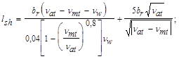
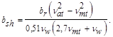
4.11. В состав рыбоходных сооружений входят: входной оголовок, тракт рыбохода, устройство для гашения избыточной энергии потока в тракте рыбохода, верхняя голова с ихтиологическим устройством, блок питания.
4.12. Входной оголовок, предназначенный для привлечения рыбы в рыбоход, следует проектировать в виде лотка открытого типа с шириной, равной ширине тракта рыбохода, и глубиной воды в нем не менее 1,0 м.
4.13. Тракт рыбохода, предназначенный для прохождения по нему рыбы из нижнего бьефа в верхний, следует проектировать в зависимости от типа рыбохода:
непрерывным с постоянным или переменным уклоном дна;
из чередующихся горизонтальных и наклонных участков;
из горизонтальных участков - бассейнов, расположенных ступенчато и разделенных стенками с вплывными отверстиями.
Ширина тракта рыбохода должна быть 3,0-10,0 м, глубина воды - 1,0-2,5 м, уклон дна - 1:20-1:8.
Перепад уровней между камерами следует устанавливать из условия, чтобы скорости во вплывных отверстиях не превышали бросковых скоростей для рыб.
4.14. Блок питания должен быть объединенным (весь расход подается по тракту), если скорости течения в тракте не превышают сносящих; в остальных случаях надлежит предусматривать автономный блок питания, при котором раздельно подаются расходы в тракт и во входной оголовок или непосредственно в зону привлечения рыб.
4.15. В состав рыбоподъемных сооружений необходимо включать следующие основные элементы: рыбонакопитель (низовой лоток), рабочую камеру или контейнер, верховой (выходной) лоток и блок питания. Рыбоподъемные сооружения следует оборудовать ихтиологическим, побудительным и сопрягающим устройствами.
4.16. Рыбонакопители следует проектировать в виде продольного лотка открытого типа, как правило, прямоугольного сечения. Устройство над лотком мостовых, кабельных и других переходов и путепроводов, создающих периодические шумы, вибрацию и светотень, не допускается.
Минимальные параметры рыбонакопителей, м, приведены ниже.
Длина L...................60,0
Ширина b =2br .......6,0
Глубина d .................1,5
При обеспечении непрерывной подачи расхода воды в рыбонакопитель для привлечения рыб его следует принимать однониточным. Конструкция рыбонакопителя должна обеспечивать условия равномерного распределения скоростей внутри лотка по его длине и сечению при отношении максимальной скорости к средней не более 1,2.
4.17. Рабочую камеру, предназначенную для перевода рыбы из нижнего в верхний бьеф гидроузла, следует принимать в виде:
вертикальной или наклонной шахты - в гидравлических рыбоподъемниках;
открытой камеры (типа судоходной) - в рыбопропускных шлюзах;
заполненных водой емкостей - в механических рыбоподъемниках и в других установках, где необходим транспорт рыбы.
Ширина рабочей камеры должна равняться ширине рыбонакопителя.
Длину рабочей камеры следует устанавливать:
для рыбоподъемников - по формуле
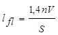
где n - расчетная численность рыб, заходящих в рыбопропускное сооружение за один цикл работы, шт.;
V - объем воды, необходимый для одной особи рыб, принимаемый для осетровых равным 0,17 м3 на 1 особь, для остальных видов рыб 0,02 м3 на 1 особь;
S - площадь живого сечения потока в рабочей камере при минимальной глубине в ней, м2;
для рыбопропускных шлюзов - по формуле
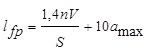
где аmax - максимальная величина открытия водопропускного отверстия блока питания.
4.18. Время наполнения рабочей камеры надлежит назначать из условия подъема уровня воды в ней со скоростью не более 2,5 м/мин. Время опорожнения рабочей камеры следует устанавливать таким, чтобы суммарный расход из блока питания и системы опорожнения не превышал расход, обеспечивающий заданные скорости привлечения.
4.19. Размеры выходного лотка, предназначенного для вывода рыбы из рабочей камеры в верхний бьеф гидроузла, следует назначать:
длину - из условия расположения выходных отверстий на таком расстоянии от водосбросного сооружения, где скорости потока не превышают 0,4 м/с;
глубину воды - не менее 2 м при максимальной сработке водохранилища в период эксплуатации рыбопропускного сооружения;
заглубление выходного отверстия из лотка - не менее 0,5 м ниже того же уровня воды;
площадь живого сечения в выходном отверстии - не менее 8 м2.
Конструкция выходного лотка должна обеспечивать непрерывную или периодическую (в каждый цикл пропуска рыбы) проточность в направлении от выходного отверстия к рабочей камере со средними скоростями не менее пороговой - для рыб максимальной длины и не более половины сносящей - для рыб минимальной длины.
Следует избегать совмещения выходного лотка с трактом подачи расходов к блоку питания.
4.20. Следует рассматривать возможность применения блоков питания в виде:
регулируемых отверстий в рабочих затворах;
эжекторных устройств и насосных установок;
водосбросных устройств;
гидроагрегатов.
4.21. Блок питания должен обеспечивать образование шлейфа привлекающих скоростей, эффективную длину и ширину которого следует назначать в соответствии с п. 4.10.
Площадь открытия водопропускных отверстий блока питания А надлежит устанавливать по формуле
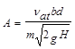
где Н - напор на затворе, м;
т - коэффициент расхода блока питания.
На предварительных стадиях проектирования коэффициент расхода следует определять в зависимости от конструкции блока питания по табл. 3.
4.22. При проектировании рыбопропускных сооружений необходимо предусматривать уменьшение скорости течения на входе в рыбонакопитель в конце режима привлечения с верхней границы привлекающей скорости (см. табл. 2) до ее нижней границы с градиентом не более 0,25 см/с за 1 с.
4.23. Ихтиологическое устройство следует предусматривать для учета пропускаемой рыбы, ее отбора и мечения. Его следует выполнять в виде горизонтальной замкнутой площадки в рыбонакопителе, рабочей камере или верховом лотке длиной не менее 2,5 м, оснащенной приборами для учета рыбы и приспособлениями для спуска ихтиолога на площадку.
Таблица 3
|
Параметр конструкции блока питании |
Коэффициент расхода |
|
|
Плоский затвор с клинкетами, перекрываемыми общей шторкой |
При сквозности рыбоудерживающей решетки: |
|
|
0,55 |
0,59 |
|
|
0,65 |
0,70 |
|
|
Плоский затвор с клинкетами, перекрываемыми отдельными клапанами |
При относительном открытии клинкетного отверстия: |
|
|
0,1 |
0,58 |
|
|
0,4 |
0,62 |
|
|
1,0 |
0,40 |
|
|
Водослив практического профиля с щитовым затвором на гребне |
При угле скоса щитового затвора 30 - 45° |
0,83+0,06 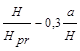 где H - см. формулу (5); Hрr - профилирующий напор, м; а - высота открытия затвора, м |
4.24. Оборудование и механизмы рабочей камеры следует размещать в нишах, за пределами лицевой (внутренней) грани или выше уровня воды.
Затворы рыбопропускных сооружений должны иметь двустороннюю обшивку, предотвращающую попадание рыбы в межригельное пространство затворов.
Пазы, ниши и технологические углубления в стенках и днище рыбопропускных сооружений необходимо перекрывать рыбозащитными шторками и решетками.
4.25. Оборудование для накопления, продвижения, побуждения и транспорта рыб должно иметь фартуки или другие приспособления, полностью перекрывающие зазоры между элементами оборудования и поверхностями рыбопропускного сооружения.
4.26. Для увеличения концентрации рыб в зоне их привлечения в рыбопропускное сооружение следует предусматривать рыбонаправляющее устройство.
РЫБОЗАЩИТНЫЕ СООРУЖЕНИЯ
4.27. Рыбозащитные сооружения необходимо предусматривать с целью предупреждения попадания, травмирования и гибели личинок и молоди рыб на водозаборах и отвода их в рыбохозяйственный водоем.
4.28. Проектирование рыбозащитных сооружений необходимо производить на основе рыбоводнобиологических обоснований с выполнением соответствующих ихтиологических изысканий, в которых должны быть определены: видовой и размерный состав с указанием минимального размера защищаемых рыб; период их ската и миграции; вертикальное и горизонтальное распределение рыб; места расположения нерестилищ и зимовальных ям; сносящая скорость течения для молоди защищаемых рыб.
4.29. Водозаборы с рыбозащитными сооружениями следует размещать с учетом экологического районирования водоема, в зонах (биотопах) пониженной плотности рыб. Не допускается их расположение в районах нерестилищ, зимовальных ям, на участках интенсивной миграции и большой концентрации личинок и молоди рыб, в заповедных зонах.
4.30. Эффективность рыбозащитных сооружений должна быть не менее 70% для рыб промысловых видов размером более 12 мм. Параметры рыбозащитного сооружения необходимо назначить из условия обеспечения подачи потребителю расчетного расхода воды.
4.31. Рыбозащитные сооружения допускается устраивать в виде блока из отдельных секций при условии исключения их взаимного отрицательного влияния на процесс защиты и отвода рыбы.
4.32. В зависимости от расчетного расхода водозабора следует применять типы рыбозащитных сооружений, приведенные в табл. 4 и в рекомендуемом приложении 8.
Таблица 4
|
Расчетный расход водозабора, м3/с |
|||||
|
группа (по способу защиты рыб) |
тип |
менее 0,5 |
от 0,5 до 5,0 |
от 5,0 до 10,0 |
более 10,0 |
|
Заградительные |
Сетчатый струереактивный барабан, установленный в транзитном потоке |
+ |
- |
- |
- |
|
Оголовок с потокообразователем (РОП), установленный в транзитном потоке |
+ |
- |
- |
- |
|
|
Конический однополосный рыбозаградитель с рыбоотводом (конусный) |
- |
+ |
+ |
+ |
|
|
Конический двухполосный рыбозаградитель с рыбоотводом |
+ |
+ |
- |
- |
|
|
Вертикальные сетчатые, перфорированные или фильтрующие экраны V- и W - образные в плане с секциями длиной до 25 м |
+ |
+ |
+ |
+ |
|
|
Отгораживающие |
Зонтичный оголовок водозабора |
+ |
+ |
- |
- |
|
Концентрирующие |
Рыбозащитный концентратор с вертикальной сепарацией рыб (РКВС); блок-секции на 5, 10 и 25 м3/с с блочным применением |
- |
+ |
+ |
+ |
|
Примечание. Другие типы рыбозащитных сооружений допускается применять по согласованию с Минрыбхозом СССР. |
|||||
Таблица 5
|
12 |
15 |
20 |
30 |
40 |
50 |
60 |
70 |
90 |
|
|
Диаметр отверстия в экранах, мм |
1,5 |
2 |
3 |
4 |
6 |
7 |
8 |
9 |
10 |
|
Примечание. При квадратных отверстиях в экране указанные в табл. 5 размеры соответствуют диагонали ячейки. |
|||||||||
4.33. Диаметры отверстий в экранах заградительного рыбозащитного сооружения следует принимать по табл. 5.
4.34. Размеры подводящего канала при установке экранов заградительного рыбозащитного сооружения должны назначаться из условия обеспечения в нем скорости течения в канале на подходе к рыбозащитному сооружению nf £ 1,5np, где nр - сносящая скорость для молоди защищаемых видов рыб.
4.35. Длину одной секции экрана lр и скорость течения в оголовке рыбоотводящего тракта nt надлежит принимать в зависимости от скорости течения подходящего потока nf по табл. 6.
Таблица 6
|
0,5nр |
1,0nр |
1,5nр |
|
|
lр , м |
1200lf |
600lf |
450lf |
|
nt, м/с |
np |
1,5np |
2np |
|
Обозначение, принятое в табл. 6: lf - длина тела молоди, м. |
|||
4.36. Форму в плане экрана заградительного рыбозащитного сооружения, как правило, следует назначать криволинейной по уравнению
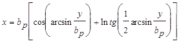
где x и у - соответственно продольные и поперечные координаты криволинейного фильтрующего экрана;
bp - ширина водоотборной полосы одной секции экрана с рыбоотводом.
4.38. Площадь экранов рыбозаградителей, устанавливаемых в соответствии с требованиями пп. 4.34-4.37, следует принимать с коэффициентом запаса g = 1,2, учитывающим возможность засорения экрана в процессе его работы.
4.39. Рыбозащитные концентрирующие сооружения должны включать следующие основные элементы: водоподводящий канал, концентрирующие устройства, рыбоотводящий тракт.
4.40. Площадь поперечного сечения концентрирующих устройств S следует определять по формуле
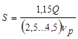
4.41. Число секций в блоке концентрирующих устройств надлежит устанавливать по условию
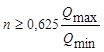
где Qmax и Qmin - соответственно максимальные и минимальные расходы водозабора.
4.42. Концентрирующее устройство для защиты рыб путем их вертикальной сепарации (РКВС) следует проектировать в виде трубы или лотка, имеющих прямоугольное или трапецеидальное сечение, с установленными в них концентраторами рыб. Концентраторы рыб надлежит проектировать в виде сужающихся в плане лотков с наклонным дном, гребнем и козырьком. Параметры лотков устанавливают методом подбора из зависимости
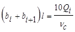
где bi и bi+1 - ширина соответственно входного и выходного сечения концентратора;
l - длина концентратора от низового ребра гребня до верхового ребра козырька;
Qi - расход воды, отбираемый в i-ое водозаборное окно;
nс - средняя продольная скорость над гребнем лотков-концентраторов.
Длину козырька, устанавливаемого на входе в концентратор под углом 45°, следует определять по зависимости ln= 0,3l.
4.43. Рыбозащитное сооружение должно обеспечить вывод рыб из зоны защиты к оголовку рыбоотводящего тракта или в транзитный поток без их травмирования.
4.44. Скорость течения потока в рыбоотводящем тракте, проходящем в открытом канале, следует принимать не менее сносящей скорости для защищаемых рыб.
4.45. При применении закрытых рыбоотводящих трактов при длине закрытого участка более 50 м надлежит предусматривать колодцы, расположенные на расстоянии не более 50 м друг от друга.
5. ОСНОВНЫЕ РАСЧЕТНЫЕ ПОЛОЖЕНИЯ
5.1. Подпорные стены, судоходные шлюзы, рыбопропускные и рыбозащитные сооружения, их конструкции и основания следует рассчитывать по методу предельных состояний.
Расчеты должны производиться по двум группам предельных состояний:
по первой группе (полная непригодность сооружений, их конструкций и оснований к эксплуатации) - расчеты общей прочности и устойчивости системы сооружение-основание; общей фильтрационной прочности оснований; устойчивости против опрокидывания для сооружений на скальном основании и для отдельных видов сооружений - против всплывания; прочности отдельных элементов сооружений, разрушение которых приводит к прекращению эксплуатации сооружений; неравномерных перемещений различных участков основания, приводящих к невозможности дальнейшей эксплуатации сооружения;
по второй группе (непригодность к нормальной эксплуатации) - расчеты оснований на местную прочность, расчеты по ограничению перемещений и деформаций; по образованию или раскрытию трещин; по нарушению местной фильтрационной прочности отдельных элементов сооружений, не рассматриваемой по первой группе предельных состояний.
5.2. Расчеты бетонных и железобетонных конструкций, в том числе на температурные воздействия, должны производиться в соответствии со СНиП 2.06.06-87.
5.3. Фильтрационные расчеты оснований и сооружений следует производить в соответствии со СНиП 2.02.02-85 и СНиП 2.06.06-85.
Для сооружений I и II классов характеристики фильтрационного потока (уровни, давления, градиенты напора, расходы), как правило, следует определять, рассматривая пространственную задачу. Допускается рассматривать плоскую задачу для сооружений III и IV классов и для средней части сооружений I и II классов, когда их протяженность превышает 2,5 высоты.
Фильтрационное давление на подошву сооружений I и II классов, возводимых на скальном основании, и для сооружений III и IV классов, независимо от вида основания, допускается определять исходя из линейного закона его распределения на отдельных участках, учитывая при этом разгружающее действие противофильтрационных устройств и дренажей, если таковые предусматриваются проектом.
5.4. При расчете следует учитывать совместную работу сооружения с грунтом основания и засыпкой. Боковое давление грунта засыпки при этом необходимо определять с учетом прочностных и деформационных характеристик грунта и ограждающей конструкции, условий на контакте грунта и сооружения, последовательности и характера нагружения системы сооружение-основание, изменений уровней воды, изменений температуры окружающей среды, влияния соседних сооружений. Как правило, следует учитывать нелинейность и неоднозначность связи между напряжениями и деформациями в грунте, а для особо ответственных сооружений - зависимость этой связи от последовательности и характера нагружения и необратимости деформаций.
Расчет системы сооружение-основание допускается производить приближенными методами, в которых боковое давление грунта определяют как сумму основного и дополнительного (реактивного) давлений, действующих на расчетную плоскость сооружения или засыпки, в соответствии с пп. 5.5 - 5.7 и рекомендуемым приложением 9.
а) при расчетах устойчивости гравитационных подпорных стен
давление грунта на тыловую грань
для стен на нескальном основании - принимая грунт в состоянии предельного равновесия (активное давление);
для стен на скальном основании при жесткой связи со скалой и при наличии упора с низовой стороны - принимая грунт в допредельном состоянии (давление покоя);
давление грунта на лицевую грань - в соответствии со СНиП 2.02.02-85;
б) при расчетах прочности (в том числе контакта сооружения со скалой), деформаций и перемещении гравитационных подпорных стен и стен камер шлюзов давление грунта, как правило, следует определять, принимая грунт в допредельном напряженном состоянии (давление покоя) с лицевой и тыловой граней стены. При повышенной деформативности стены или основания следует рассматривать возможность образования состояния предельного равновесия засыпки с тыловой и лицевой граней стены. Для стен, отнесенных к временным сооружениям, и стен высотой до 10 м разрешается производить расчеты на активное давление грунта;
в) при расчетах тонкостенных конструкций (шпунтовых и др.) боковое давление грунта допускается определять, принимая грунт в состоянии предельного равновесия (на тыловую грань - активное, на лицевую - пассивное). Влияние деформаций и других факторов учитывается путем введения (к расчетным значениям давления грунта или изгибающих моментов, анкерных реакций и заглубления шпунта) коэффициентов условий работы, устанавливаемых по нормам проектирования отдельных конструкций;
г) при расчетах точности и деформаций ячеистых конструкций, засыпанных грунтом, боковое давление на внутренние стены ячеек определяется с учетом силосного эффекта и увеличения давления в нижней части стены за счет врезки в основание.
Примечание. За расчетную плоскость принимается поверхность сооружения на контакте с грунтом или условная плоскость внутри грунта (при наличии неплоской поверхности или разгрузочных элементов).
5.6. Боковое давление грунта в состоянии предельного равновесия, соответствующее стадии образования поверхности обрушения (активное давление) или поверхности выпора (пассивное давление), следует, как правило, определять с учетом трения по расчетной плоскости. При этом необходимо рассматривать возможность образования поверхности обрушения и выпора по профилю откоса котлована или другой возможной ослабленной поверхности. Абсолютную величину угла трения js по расчетной плоскости в зависимости от характеристики грунта засыпки, состояния поверхности тыловой грани стены, воздействий динамических нагрузок и других факторов следует принимать от 0 доjI, II, но не более 30°.
5.7. Дополнительное (реактивное) давление грунта на тыловую грань стены, вызываемое температурными воздействиями или дополнительным давлением воды при наполнении камеры шлюза или другими временными длительными нагрузками со стороны лицевой грани стены, а также при деформации основания, приводящего к перемещению стены на грунт засыпки, определяется расчетом сооружения совместно с грунтом засыпки и основания. Грунт допускается рассматривать как упругое, линейно деформируемое основание, характеризуемое модулем деформации и коэффициентом поперечного расширения или коэффициентом упругого отпора (постели).
Дополнительное (реактивное) давление грунта учитывается при расчете прочности и деформации конструкций, а также при расчете железобетонных конструкций по образованию и раскрытию трещин; в расчетах устойчивости сооружений дополнительное давление грунта не учитывается.
Ординаты интенсивности дополнительного (реактивного) давления грунта в сумме с ординатами интенсивности основного давления грунта не должны превышать интенсивности пассивного давления.
При определении дополнительного (реактивного) давления следует учитывать влияние расположенных за засыпкой на расстоянии, меньшем ее высоты, других сооружений или скального массива.
5.8. В сооружениях с параллельными подпорными стенами (например, двухниточные шлюзы), где расстояние между стенами не превышает высоты засыпки, следует учитывать дополнительное давление грунта, вызванное перемещением параллельно расположенной стены на грунт засыпки.
5.9. Расчеты сооружений небольшой протяженности, непрямолинейных в плане, переменной высоты, с переменной высотой засыпки, с неоднородным вдоль сооружения основанием или засыпкой или другими переменными параметрами следует производить как для пространственной конструкции, т. е. для всего сооружения или его секции, ограниченной постоянными деформационными швами, с учетом взаимодействия с соседними сооружениями или конструкциями.
Если перечисленные параметры не изменяются по длине сооружения на протяжении более трех его высот, расчеты допускается производить на единицу длины сооружения.
5.10. При расчете голов шлюзов, расположенных на наскальном основании, следует рассматривать раздельное возведение днища и устоев с последующим их замыканием в пространственную конструкцию докового типа. В головах шлюзов, возводимых на скальном основании, как правило, устои с плитой днища не омоноличиваются, их расчет ведется раздельно.
5.11. Расчеты устойчивости сооружений на плоский, глубинный и смешанный сдвиг производятся в соответствии со СНиП 2.02.02-85, на опрокидывание - по указаниям п. 5.12, на всплытие - по п. 5.13.
При расчете устойчивости голов судоходных шлюзов или других аналогичных сооружений, имеющих отсылку по боковым поверхностям, в силы сопротивления следует включать силы трения грунта по боковым поверхностям.
При проверке устойчивости ячеистых конструкций на плоский сдвиг вес грунта, заполняющего ячейки, учитывается полностью.
При проверке устойчивости этих конструкций на опрокидывание вес грунта в ячейке, передающийся непосредственно на основание, не учитывается.
Кроме обычной проверки устойчивости на сдвиг и опрокидывание ячеистые конструкции из шпунта следует проверять на сдвиг по вертикальной плоскости внутри ячейки и на разрыв замков шпунтин.
5.12. Подпорные стены и другие аналогичные им сооружения, возводимые на скальном основании или бетонной плите, следует проверять на опрокидывание по зависимости
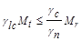
где Mt, Mr - суммы моментов сил, стремящихся опрокинуть и удержать сооружение относительно центра тяжести прямоугольной эпюры сжимающих напряжении в бетоне интенсивностью Rbt, при этом моменты вычисляются для каждого силового воздействия в отдельности;
glc - коэффициент сочетания нагрузок;
gn - коэффициент надежности по назначению сооружения;
gс - коэффициент условий работы, принимаемый равным 1.
При сопротивлении скального основания смятию Rсs или бетонной плиты сжатию Rbt, равному менее 20 smz, где smz - среднее напряжение по подошве сопряжения, устойчивость подпорных стен и аналогичных им сооружений следует рассчитывать по схеме предельного поворота в соответствии со СНиП 2.02.02-85. Сопротивление скального основания смятию Rcs следует также определять по СНиП 2.02.02-85.
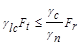
где gс = 1;
Ft и Fr - соответственно сумма сил, отрывающих конструкцию от основания и удерживающих ее.
Прочность контакта сооружения с основанием на отрыв учитывается только при анкеровке конструкции в скальном основании. Конструкция, сечения и заглубление анкеров должны проверяться расчетом прочности, устойчивости и деформаций.
НАГРУЗКИ, ВОЗДЕЙСТВИЯ И ИХ СОЧЕТАНИЯ
5.14. Нагрузки, воздействия и их сочетания должны определяться согласно требованиям СНиП 2.06.01-86, СНиП 2.06.04-82, СНиП II-7-81 и настоящего раздела.
5.15. При расчетах на основные сочетания нагрузок и воздействий надлежит учитывать:
постоянные нагрузки и воздействия
а) собственный вес сооружения, включая вес постоянного технологического оборудования (затворы, подъемные механизмы и пр.), местоположение которого на сооружении не меняется в процессе эксплуатации:
б) вес грунта, постоянно расположенного на сооружении;
в) боковое давление грунта, возникающее от действия собственного веса грунта, постоянных и длительных временных нагрузок, действующих на поверхности грунта;
г) силовое воздействие воды, в том числе фильтрационное при установившихся расчетных уровнях со стороны лицевой и тыловой граней подпорной стены и стен шлюзов, при нормальной работе противофильтрационных и дренажных устройств (для причальных сооружений и набережных, не входящих в состав сооружений напорного фронта, данная нагрузка относится к временной длительной);
д) предварительное напряжение конструкции или ее анкерных устройств;
временные длительные нагрузки и воздействия
е) силовое воздействие воды на лицевую грань подпорной стены, стены камеры шлюза при наивысшем уровне воды основного расчетного случая или уровне наполненной камеры шлюза;
ж) температурные воздействия, соответствующие изменениям среднемесячных температур окружающей среды для среднего по температурным условиям года;
з) дополнительное (реактивное) боковое давление грунта на подпорные стены и стены камер шлюзов, возникающее от действия длительных временных нагрузок (дополнительное давление воды на лицевую грань, температурные воздействия, навал стены на грунт засыпки);
кратковременные нагрузки и воздействия
и) нагрузки от транспортных воздействий, строительных и перегрузочных механизмов и складируемых грузов (в зависимости от эксплуатационных условий данные нагрузки могут быть отнесены к временным длительным);
к) нагрузки от судов (навал, натяжение швартовов) при расчетных скоростях подхода судов;
л) нагрузки от волн, принимаемые в соответствии со СНиП 2.06.04-82 при средней многолетней скорости ветра;
м) ледовые нагрузки, принимаемые в соответствии со СНиП 2.06.04-82 для средней многолетней толщины льда;
н) гидродинамические, пульсационные нагрузки воды.
5.16. При расчетах на особые сочетания нагрузок и воздействий следует учитывать постоянные, временные длительные, кратковременные и одну из особых нагрузок и воздействий:
а) сейсмические воздействия;
б) силовое воздействие воды, в том числе фильтрационное при форсированном уровне воды в водоеме (поверочный расчетный случай), соответствующем уровне нижнего бьефа, в случае нарушения нормальной работы противофильтрационных и дренажных устройств (до 50 % полной эффективности) (взамен п. 5.15 г);
в) температурные воздействия, определяемые для года с максимальной амплитудой колебаний среднемесячных температур, а также для года с максимально низкой среднемесячной температурой (взамен п. 5.15 ж);
г) волновое воздействие, определяемое в соответствии со СНиП 2.06.04-82 при максимальной расчетной скорости ветра обеспеченностью 2 % - для сооружений I и II классов, и 4 % - для сооружений III и IV классов (взамен п. 5.15 л);
д) ледовые нагрузки, определяемые при максимальной многолетней толщине или прорыве заторов в зимних попусках воды в нижнем бьефе (взамен п. 5.15 м);
е) воздействия, вызванные взрывами вблизи проектируемого сооружения.
5.17. В основные и особые сочетания нагрузок и воздействий следует включать только те из кратковременных нагрузок и воздействий (п. 5.15 и, к, л, м, н), которые могут действовать одновременно.
5.18. Нагрузки и воздействия должны приниматься в наиболее неблагоприятных, но возможных сочетаниях, отдельно для эксплуатационного и строительного периодов.
5.19. Коэффициенты надежности по нагрузкам gf принимаются в соответствии со СНиП 2.06.01-86. При использовании расчетных параметров грунтов, определенных по СНиП 2.02.02-85, коэффициент надежности по нагрузке для всех грунтовых нагрузок принимается равным 1.
При отсутствии экспериментального обоснования прочностных характеристик грунтов допускается для песчаных грунтов засыпок подпорных стен III и IV классов, а также для предварительных расчетов стен I и II классов использовать их нормативные значения, приведенные в СНиП 2.02.01-83 с уменьшением их значений на коэффициент условий работы gc = 0,9 (грунт засыпки). В этом случае коэффициент надежности по нагрузке следует принимать gf = 1,2 (0,8).
5.20. При соответствующем обосновании допускается не учитывать кратковременные нагрузки редкой повторяемости в расчетах по предельным состояниям второй группы.
5.21. Пульсационные и другие виды гидродинамических нагрузок определяются на основании гидравлических лабораторных исследований.
5.22. Нагрузки от судов следует определять по обязательному приложению 10.
ПРИЛОЖЕНИЕ 1
Справочное
ОСНОВНЫЕ БУКВЕННЫЕ ОБОЗНАЧЕНИЯ
Характеристики грунтов
rd - плотность сухого грунта;
En - нормативное значение модуля деформации;
n - коэффициент поперечной деформации;
К - коэффициент упругого отпора;
jn - нормативное значение угла внутреннего трения;
cn - нормативное значение удельного сцепления грунта;
jI,II - расчетное значение угла внутреннего трения;
js - угол трения грунта по расчетной плоскости;
cI,II - расчетное значение удельного сцепления;
Rcs - сопротивление скального основания смятию.
НАГРУЗКИ И ВОЗДЕЙСТВИЯ, УСИЛИЯ ОТ НИХ
Нd - расчетный напор воды;
Ft и Fr - соответственно сумма сил, отрывающих конструкцию от основания и удерживаюших ее;
Mt и Mr - суммы моментов сил, стремящихся опрокинуть и удержать сооружение;
Fl - продольная составляющая гидродинамических сил;
Fq - поперечная горизонтальная сила от навала судна;
Qtot - поперечная сила от суммарного воздействия ветра и течения;
Eah и Ean - расчетные значения горизонтальных и вертикальных составляющих активного давления грунта с верховой стороны сооружения;
Eph и Epn - расчетные значения горизонтальных и вертикальных составляющих пассивного давления грунта с низовой стороны сооружения.
ГИДРОДИНАМИЧЕСКИЕ ХАРАКТЕРИСТИКИ ПОТОКА
nf - скорость течения подходного потока;
nmt - средняя скорость спутного потока от водосбросных сооружений;
nt - скорость течения в оголовке рыбоотводящего тракта;
nw - пороговая скорость;
nat - привлекающая скорость;
np - сносящая скорость;
nth - бросковая скорость;
Q - расход водозабора.
ГЕОМЕТРИЧЕСКИЕ ХАРАКТЕРИСТИКИ
S - площадь живого сечения потока;
l1 - длина рабочей камеры рыбоподъемника;
A - площадь открытия водосбросных отверстий;
bri - ширина водосборной полосы одной секции экрана;
lsh - длина шлейфа;
br - полуширина рыбонакопителя;
bc - ширина камеры шлюза;
bc,ef - полезная ширина камеры;
bs - ширина расчетного судна;
ls - длина камеры шлюза;
lc,ef - полезная длина камеры шлюза;
l - длина пути входа (выхода) расчетного судна;
ls - длина расчетного судна;
l1,2,3 - длины участков подходного канала к шлюзу;
la - длина верхнего (нижнего) участка подхода;
lst - длина прямолинейного участка судоходной трассы;
lr - длина криволинейной вставки;
lm - длина причальной линии;
hl - глубина на пороге шлюза;
hbr - высота подмостового габарита;
hh - высота перекрываемого отверстия в створе ворот;
s - статическая осадка расчетного судна в полном грузу.
ПРИЛОЖЕНИЕ 2
Обязательное
ОСНОВНЫЕ ПОЛОЖЕНИЯ ПО ОПРЕДЕЛЕНИЮ ГРУЗООБОРОТА, СУДООБОРОТА И ПРОПУСКНОЙ СПОСОБНОСТИ ШЛЮЗОВ
1. Данные по типам расчетных судов, грузо- и судообороту (навигационному и среднесуточному в наиболее напряженный период навигации) в створе гидроузла, определяемые на расчетный перспективный срок, следует устанавливать на основании схемы развития водного транспорта бассейна, а при отсутствии ее на расчетный перспективный срок - на основании экономических исследований.
За расчетный перспективный срок принимается: для шлюзов на сверхмагистральных и магистральных водных путях - 10 лет после начала постоянной эксплуатации; для шлюзов на водных путях местного значения - 5 лет.
Расчетное судно (составы, плот) выбирается по водоизмещению, длине, ширине, осадке, надводному возвышению привального бруса, надводному габариту согласно сетке типов судов, утвержденной Минречфлотом РСФСР или управлениями речного флота союзных республик или другими органами, регулирующими судоходство.
2. Навигационный судооборот определяется по направлениям вверх и вниз отдельно груженых и порожних судов различных типов: самоходных и несамоходных, пассажирских и грузопассажирских, плотоводов, технического флота, шлюзуемых секций плотов и др.
3. Среднесуточный судооборот в наиболее напряженный период навигации по каждому виду перевозок определяется как отношение навигационного судооборота к длительности навигации, сут, умноженное на коэффициент неравномерности подхода судов и плотов к шлюзам, принимаемый по данным анализа проектируемого судооборота. При отсутствии таких данных коэффициент неравномерности допускается принимать: для судов 1,3; плотов 1,7.
Длительность навигации, сут, устанавливается с учетом ее продления при отрицательных температурах воздуха органами, регулирующими судоходство на внутренних водных путях.
4. Общее число шлюзований в сутки следует определять как сумму шлюзований транспортного флота (включая плоты) и двух пар шлюзований для сверхмагистральных и магистральных водных путей и одной пары - для водных путей местного значения для пропуска технического флота.
5. Пропуск судна производится через шлюз при одностороннем или двустороннем шлюзовании.
Время цикла одностороннего шлюзования определяется продолжительностью следующих операций: ввод судов в шлюз, учалка судов, закрытие ворот, наполнение или опорожнение камеры, открытие ворот, вывод судов из шлюза, закрытие ворот, опорожнение или наполнение камеры, открытие ворот.
Время цикла двустороннего шлюзования определяется продолжительностью следующих операций: ввод судов в шлюз, учалка судов, закрытие ворот, наполнение или опорожнение камеры, открытие ворот, вывод судов из шлюза, ввод судов в шлюз, учалка судов, закрытие ворот, наполнение или опорожнение камеры, открытие ворот, вывод судов из шлюза.
Для многокамерного шлюза во всех случаях добавляется операция по переводу судов из одной камеры шлюза в другую.
6. Время на учалку судна в шлюзе для всех судов, за исключением скоростных, следует принимать 2 мин, для скоростных судов - 0,5 мин.
7. Время наполнения и опорожнения камер шлюза следует определять гидравлическими расчетами. Для предварительных расчетов время наполнения и опорожнения камеры шлюза t, мин, допускается определять по формуле
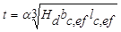
где a - коэффициент, принимаемый для шлюзов с головной системой питания равным 0,27, с распределительной системой питания - 0,19;
Нd - расчетный напор на камеру, м;
bc,ef - полезная ширина камеры, м;
lc,ef - полезная длина камеры, м.
8. Время открытия и закрытия ворот шлюза следует определять на основании конструктивных разработок в зависимости от типа ворот и механизмов, высоты перекрываемого отверстия, а также ширины шлюза.
При предварительных расчетах продолжительности открытия и закрытия ворот допускается принимать:
для плоских ворот - 2 мин при высоте перекрываемого отверстия hh£ 5 м; 2,5 мин при 5 <hh £10 м и 3 мин при hh > 10 м;
для двустворчатых ворот - 2 мин при ширине камеры bc £ 18 м; 2,5 мин при 18 <bc £ 30 м и 3 мин при bc > 30 м.
9. Время ввода судов в шлюз, вывода из него и перевода из камеры в камеру определяется в зависимости от скорости и длины пути их движения.
Скорость движения необходимо определять расчетом из условия обеспечения безопасности входа, выхода и стоянки судов у причала.
Для предварительных расчетов средние скорости движения судов на внутренних водных путях в шлюзе и на подходах к нему принимаются по табл. 1.
10. Длина пути движения судна при входе в шлюз и выходе из него определяется положением его на подходах и в камере.
Начальное расчетное положение на подходе при одностороннем движении судов в каждом из направлений определяется допустимой величиной гидродинамической силы при наполнении (опорожнении) камеры из подходного канала, при боковом заборе и выпуске воды - возможностью открытия ворот перед ним. При двустороннем движении судов начальное положение судна определяется возможностью расхождения со встречным судном. Во всех случаях расстояние между судном и воротами не должно быть менее 5 м.
Положение последующих судов при выходе определяется: при одностороннем движении - возможностью закрытия ворот за ними, а при двустороннем движении - расхождением со встречным судном, ожидающим шлюзования.
При одновременном шлюзовании нескольких судов длину пути движения следует определять по судну, которое входит в камеру шлюза и выходит из нее последним.
При переходе из камеры в камеру длина пути движения принимается равной длине камеры и средней головы шлюза.
Таблица 1
|
Средняя скорость движения, м/с |
|||
|
вход |
выход |
переход из одной камеры в другую |
|
|
Скоростные суда |
2,0 |
3,0 |
1,50 |
|
Самоходные суда |
1,0 |
1,4 |
0,75 |
|
Толкаемые составы |
0,9 |
1,2 |
0,75 |
|
Буксируемые составы |
0,7 |
1,0 |
0,60 |
|
Плоты |
0,6 |
0,6 |
0,50 |
11. При предварительных расчетах длину пути входа (выхода) расчетного судна, ожидающего шлюзования у причала, допускается принимать равной:
при одностороннем движении судов в каждом из направлений
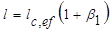
при двустороннем движении судов
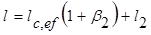
где lc,ef - см. формулу (1);
b1 - коэффициент, принимаемый равным: при входе 0,4, при выходе 0,1;
b2 - коэффициент, принимаемый равным 0,4;
l2 - длина участка, определяемая в соответствии с обязательным приложением 5.
12. Грузо- и судопропускная способность шлюзов определяется числом шлюзований расчетных судов исходя из полной загрузки шлюза в наиболее напряженные сутки (при работе шлюза, а среднем, в течение 23 ч) при принятых типах расчетных судов и структуре перевозок на установленные расчетные сроки. При определении пропускной способности однониточных шлюзов число шлюзовании для всех типов судов следует принимать 25 % при одностороннем шлюзовании и 75 % при двустороннем шлюзовании; для плотов принимается только одностороннее шлюзование.
13. Число ниток шлюзов определяется исходя из необходимой пропускной способности их на расчетные сроки.
Как правило, следует предусматривать возможность строительства в будущем дополнительной нитки шлюза без перерыва в работе эксплуатируемых судоходных сооружений.
При надлежащем технико-экономическом обосновании допускается принимать одну из ниток шлюзов с меньшими габаритами камер для пропуска скоростных или малогабаритных судов.
ПРИЛОЖЕНИЕ 3
Обязательное
ОПРЕДЕЛЕНИЕ ГАБАРИТОВ ШЛЮЗОВ
1. Основные габариты шлюзов (полезная длина и ширина камеры, а также глубина на порогах) должны отвечать характеристикам расчетных судов.
Основные габариты шлюзов, расположенных на одном водном пути, должны приниматься одинаковыми. Отступление от этого требования должно согласовываться с органами, регулирующими судоходство на внутренних водных путях; для шлюзов, расположенных на приморских окончаниях внутренних водных путей и водных путях, подведомственных Минморфлоту СССР, - согласовываться с этим министерством.
2. Полезная длина камер lc,ef определяется по формуле
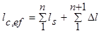
где 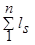
n - число одновременно шлюзуемых судов, устанавливаемых в камере шлюза в кильватер;
Dl - запас по длине камеры а каждую сторону и между судами, устанавливаемыми а камере шлюза в кильватер, определяемый по формуле
Dl = 2+0,03ls (2)
Полезная ширина камеры шлюза bc,ef определяется по формуле
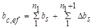
где 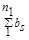
Dbs, - запас по ширине в каждую сторону и между рядом стоящими в камере судами;
n1 - число одновременно шлюзуемых (рядом стоящих) судов.
Запасы по ширине с каждой стороны камеры и между судами Dbs должны быть не менее: при ширине судна до 10 м - 0,2 м; до 18 - 0,4 м; до 30 - 0,78 м; свыше 30 - 1,0 м. В шлюзах, предназначенных для пропуска морских судов, эти запасы должны быть не менее 1,5 м при движении судна своим ходом; при заводке буксировщиком - запас с одной стороны увеличивается на ширину буксировщика.
Глубина на порогах шлюза h1 отсчитываемая от расчетного наинизшего судоходного уровня, должна приниматься
hl ³1,3s,
где s - статическая осадка расчетного судна в полном грузу.
Для шлюзов полезную длину и ширину камеры, глубину на порогах следует округлять в сторону увеличения до ближайших размеров, приведенных в таблице.
При головной системе питания успокоительный участок должен находиться за пределами полезной длины камеры.
3. Расчетные наинизшие судоходные уровни воды в бьефах и камерах шлюзов устанавливаются по ежедневным расходам или уровням воды за навигационный период в многолетнем разрезе обеспеченностью для сверхмагистральных водных путей - 99%, магистральных - 97%, местного значения - 95% с учетом понижения уровня, происходящего вследствие переформирования русла, ветрового сгона, неустановившегося движения воды, отливных явлений.
4. Расчетные наивысшие судоходные уровни воды в бьефах и камерах шлюзов, за исключением шлюзов с судоходными плотинами, устанавливаются по максимальному расходу воды расчетной вероятности превышения для сверхмагистральных водных путей - 1%, магистральных - 3%, местного значения -5 % с учетом повышения уровней воды, происходящего вследствие ветрового нагона, образования зажоров и заторов, явлений неустановившегося движении, приливных явлений.
Для гидроузлов с судоходными плотинами расчетным наивысшим уровнем считается меженный судоходный уровень, при котором предусмотрен пропуск судов через шлюз. При более высоких уровнях судоходство осуществляется через судоходный пролет плотины.
5. Для однониточных шлюзов, расположенных на канале, расчетные уровни воды следует устанавливать из условия забора из канала (при отсутствии поступления воды) или выпуска в канал воды (при отсутствии слива воды) в объеме трех сливных призм - для сверхмагистральных и магистральных водных путей и двух сливных призм - для водных путей местного значения. При двухниточных шлюзах число сливных призм принимается соответственно на одну больше.
6. Уровень воды в нижнем бьефе при ремонте шлюзов устанавливается по расходу воды с расчетной вероятностью превышения для сверхмагистральных и магистральных водных путей - выше 10%; для водных путей местного значения - выше 20%; для гидроузлов с судоходными плотинами - не выше расчетного наивысшего судоходного уровня.
7. Высота подмостовых габаритов в шлюзах hbr, надводные габариты подъемных ворот, разводных и подъемных мостов должны приниматься в соответствии с ГОСТ 26775-85 от наивысшего расчетного судоходного уровня воды (п - 4) .
|
Отношение полезной ширины камеры шлюза, м, к полезной длине, м |
37 400 |
37 300 |
30 300 |
20 300 |
20 150 |
18 150 |
15 150 |
15 100 |
12 100 |
8 50 |
6 35 |
|
Глубина на порогах шлюза, м |
6,0 |
6,0 |
6,0 |
5,5 |
5,5 |
5,5 |
4,0 |
3,0 |
3,0 |
3,0 |
1,5 |
|
5,5 |
5,5 |
5,5 |
5,0 |
5,0 |
5,0 |
3,5 |
2,5 |
2,5 |
2,5 |
1,0 |
|
|
5,0 |
5,0 |
5,0 |
4,5 |
4,5 |
4,5 |
3,0 |
2,0 |
2,0 |
2,0 |
2,0 |
|
|
- |
- |
- |
4,0 |
4,0 |
4,0 |
- |
- |
1,5 |
1,5 |
- |
|
|
Примечание. Другие габариты шлюзов допускается принимать только при согласовании с Минречфлотом РСФСР или управлениями речного флота союзных республик или другими органами, регулирующими судоходство, а для шлюзов на приморских окончаниях внутренних водных путей и водных путях, подведомственных Минморфлоту СССР, - по согласованию с этим министерством. |
|||||||||||
Ширина подмостовых габаритов bbr, принимается: при вертикальных стенах - не менее полезной ширины камеры шлюза, при наклонных стенах - не менее ширины камеры на отметке этого уровня.
8. Верх стен шлюзов, направляющих и причальных сооружений или их парапетов, способных воспринимать навал судов, при расчетном наивысшем уровне воды не должен быть ниже верхнего привального бруса наибольшего расчетного судна при полной загрузке и не ниже нижнего привального бруса расчетного судна в порожнем состоянии, а для судов на воздушной подушке и подводных крыльях - при движении их на подушке или крыльях.
Возвышение площадок, расположенных вдоль стен камер шлюзов, причальных и направляющих сооружений над расчетным наивысшим судоходным уровнем воды должно быть для шлюзов на сверхмагистральных водных путях не менее 2 м, магистральных - не менее 1 м; на водных путях местного значения - не менее 0,5 м. В многокамерных шлюзах, имеющих боковые водосливы, это возвышение должно отсчитываться от наивысшего уровня воды в камере, который устанавливается при работе водослива, возвышение сооружений и частей шлюза, входящих в напорный фронт гидроузла, должно соответствовать требованиям, предъявляемым к сооружениям напорного фронта.
9. Ширина площадок, указанных в п. 8, должна назначаться из условий размещения на них различных коммуникаций и обеспечения одностороннего проезда автотранспорта, но не менее 4,5 м.
Допускается уменьшение ширины площадок до 2 м для шлюзов на сверхмагистральных водных путях при условии обеспечения подъезда автотранспорта к каждой голове шлюза, а также шлюзов на водных путях местного значения, если на них не предусматривается заезд автотранспорта.
Ширина площадок причальных линий должна быть не менее 2 м.
10. Габарит по высоте в пределах площадок для проезда автомашин должен приниматься не менее 4,5 м, для прохода людей - не менее 2,5 м.
11. На стенах камер и голов шлюза с лицевых сторон должны быть устроены парапеты высотой не менее 1,1 м, рассчитанные на навал судна, или охранные ограждения, отнесенные от лицевой грани на расстояние, исключающее навал на них судов.
Верхней части лицевой грани стен или парапетов должно быть придано очертание, исключающее зависание судна привальным брусом, а кордон должен быть облицован металлом.
ПРИЛОЖЕНИЕ 4
Обязательное
ТРЕБОВАНИЯ К КОМПОНОВКЕ ШЛЮЗОВ В ГИДРОУЗЛАХ И НА СУДОХОДНЫХ КАНАЛАХ
1. Шлюзы в составе гидроузла на сверхмагистральных и магистральных водных путях, а также на судоходных каналах, как правило, должны быть однокамерными. Многокамерные шлюзы и шлюзы с разъездными бьефами допускаются при надлежащем обосновании.
2. Подходные каналы шлюзов, сопрягаемые с руслом реки, водохранилищем или каналом, следует проектировать с учетом возможных переформирований русла, исключения заиления входа и попадания в него льда и шуги.
Входы в подходные каналы из реки следует, как правило, располагать на вогнутом, прижимном берегу.
3. В районе сопряжения подходных каналов шлюзов с рекой или водохранилищем наибольшие продольные скорости течения не должны превышать 2,5 м/с для сверхмагистральных и магистральных водных путей и 2 м/с - для водных путей местного значения; в подходных каналах продольные скорости должны быть не более 0,8 м/с. Нормальная к оси судового хода составляющая скорости течения для водных путей всех категорий в районе входа в подходные каналы должна быть не более 0,4 м/с, непосредственно в створе входа и в самом канале не должна превышать 0,25 м/с, а в пределах причальных стенок на ширине 1,5bs от лицевой грани причала и глубине, равной осадке расчетного судна, как правило, отсутствовать полностью.
Скорости течения воды в районе сопряжения каналов с водохранилищем или рекой не должны превышать допускаемых скоростей при наиболее неблагоприятном для судоходства гидравлическом режиме работы гидроузла.
4. При отсутствии данных о скорости течения воды для предварительного проектирования направление судового хода при выходе подходного канала в реку или водохранилище допускается назначать под углом к основному течению на этом участке, не превышающем:
на сверхмагистральных и магистральных водных путях ......................25°
на водных путях местного значения ...................................................... 30°
5. В составе гидроузлов шлюзы следует располагать, как правило, в нижнем бьефе. Расположение однокамерных или верхней камеры многокамерных шлюзов в верхнем бьефе гидроузла допускается при надлежащем обосновании, при неблагоприятных инженерно-геологических и топографических условиях в нижнем бьефе или по условиям, диктуемым транспортной магистралью, пересекающей судоходные сооружения.
Черт. 1. Схема судоходного шлюза с подходами
1 - ось судового хода; 2 - шлюз; 3 - радиусы поворота судна
6. Судоходная трасса шлюза (черт. 1) должна быть прямолинейной на участке длиной не менее величины 1,1, определяемой по формуле
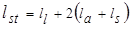
где ll - длина шлюза, включая головы;
la - длина верхнего (нижнего) участка подхода, определяемая по обязательному приложению 5;
ls - длина расчетного судна.
Длину прямолинейного участка lst допускается уменьшать в пределах участков верхнего и нижнего подходов по согласованию с Минречфлотом РСФСР или управлениями речного флота союзных республик на величину не более 2ls.
7. Ось прямолинейного участка подходного канала должна сопрягаться с осью судового хода в канале или водохранилище по кривой, очерченной радиусом r (радиус поворота судна), который должен быть не менее пяти длин расчетного судна или трех длин расчетного толкаемого состава.
8. Мостовые переходы транспортных магистралей пересекающие шлюзы, следует устраивать, как правило, через нижнюю или одну из средних (для многокамерного шлюза) голов.
9. Участки каналов на длине подхода к шлюзу la должны иметь ограждения во всех случаях, когда высота поперечной и косой (с углом более 45° ) ветровой волны у причалов шлюзов может быть более 0,6м с расчетной обеспеченностью по суммарной продолжительности в навигационный период для водных путей, %:
сверхмагистральных и магистральных ......... 2
местного значения .......................................... 5
10. Прямолинейный участок между двумя шлюзами, располагаемыми последовательно на судоходном канале (черт. 2, а), должен быть по условиям расхождения судов не менее величины lc1, определяемой по формуле
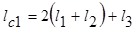
где l1, l2, l3 - длины участков, определяемые согласно требованиям обязательного приложения 5.
При размещении двух шлюзов на криволинейном участке канала (черт. 2, б) расстояние между ними должно быть не менее величины lc2, определяемой по формуле
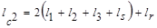
где ls, - длина расчетного судна;
lr, - длина криволинейной вставки, очерченной радиусом г.
Черт. 2. Схема размещения последовательно располагаемых шлюзов на судоходном канале
а - на прямолинейном участке; б - на криволинейном участке канала
11. В местах расположения на подходах к шлюзам сосредоточенных заборов или выпусков воды из других гидротехнических сооружении должно быть предусмотрено уширение подходов, которое назначается в зависимости от величины дрейфа, испытываемого судном под влиянием поперечного течения, скорости которого при наинизшем судоходном уровне не должны превышать 0,25 м/с. Сопряжение уширенного и нормального сечений канала выполняется плавно на длине не менее 20 уширений в каждую сторону от границ водосбросных (водозаборных) сооружений.
ПРИЛОЖЕНИЕ 5
Обязательное
ТРЕБОВАНИЯ К ГАБАРИТАМ И КОМПОНОВКЕ ПОДХОДОВ К ШЛЮЗАМ
1. Размеры и очертания подходов к шлюзам в плане должны обеспечивать расхождение шлюзуемых судов при двустороннем движении. На период временной эксплуатации шлюза при строительстве гидроузла допускается устройство подходов для одностороннего движения с разъездами или без них при условии обеспечения необходимой пропускной способности.
2. Подходы к шлюзам по взаимному расположению их оси и продольной оси шлюза подразделяют на следующие:
симметричные (черт. 1,а) - оси подходного канала и шлюза совпадают;
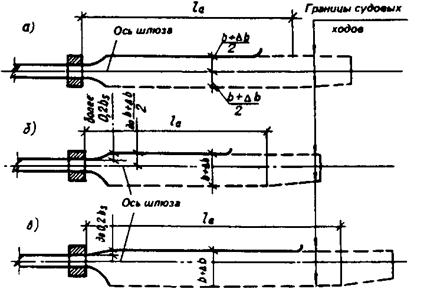
Черт. 1. Схема подходных каналов к шлюзу
а - симметричный; б - полусимметричный; в - несимметричный
полусимметричные (черт. 1, б) - ось подходного канала смешена относительно оси шлюза в сторону от причальной линии таким образом, что расстояние между лицевой гранью устоев головы шлюза и причальной линией находится в пределах от 0,2 расчетной ширины судна до расстояния, соответствующего симметричному подходу;
несимметричные (черт. 1, в) - ось подходного канала расположена по отношению к оси шлюза так, что причальная линия продолжает лицевую грань устоев головы шлюза или смещена от нее на расстояние не более 0,2 расчетной ширины судна.
3. Ширину судового хода подходных участков с прямолинейным движением на уровне расчетной осадки при наинизшем расчетном судоходном уровне следует принимать не менее величины b, определяемой по следующим формулам:
для однониточных шлюзов
b = 1,3(bs1 + bs2); (1)
для двухниточных шлюзов
b = 1,3(bs1 +bs2 + bs3), (2)
где bs1,bs2,bs3 - ширины расходящихся расчетных судов.
Ширину судового хода подходных участков двухниточных шлюзов следует принимать не менее расстояния между лицевыми гранями внешних стен камер смежных шлюзов.
В подходном канале двухниточного шлюза при размещении причальной линии на продолжении межкамерного пространства ширина судового хода к каждой нитке определяется как для однониточного шлюза из условия обеспечения расхождения двух судов.
4. Расчетная глубина судового хода подходных каналов при расчетном наинизшем судоходном уровне должна приниматься не менее 1,3 статической осадки расчетного судна в полном грузу.
При надлежащем обосновании допускается учитывать дополнительно запас на заносимость подходов.
5. Длина верхнего (нижнего) участка подхода (черт. 2), в пределах которого предусматривается расхождение встречных судов, должна быть не менее величины la, определяемой по формуле
la = l1+l2+l3, (3)
где l1 - длина участка, равная 0,5 ls;
l3
- длина участка, равная 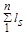
l2 - длина участка, на котором судно при встречном движении переходит с оси шлюза на ось судового хода в канале, определяемая по формуле
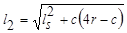
здесь ls - длина расчетного судна;
r - радиус траектории центра тяжести судна (радиус поворота судна), принимаемый не менее трех длин расчетного судна;
с - смешение оси судового хода в канале относительно оси шлюза при выходе или входе судна.
Величина смещения c определяется по формулам:
при симметричном подходе
с = 0,6bs+0,5Db; (5)
при полусимметричном подходе
с = 1,9bs+0,5Db-am, (6)
для подхода, в котором
0,75bs <am £ 1,3bs + 0,25Db,
и с = am -0,7bs (7)
для подхода, в котором
1,3bs + 0,25Db <аm < 1,3bs + 0,5Db;
при несимметричном подходе
с =1,2bs+0,5Db, (8)
где bs - ширина расчетного судна;
Db - уширение, определяемое по п. 6 настоящего приложения;
am - смещение лицевой грани причала от оси шлюза.
При определении l1,l2,l3 расчетными следует принимать суда и толкаемые составы наибольшей длины.
Черт. 2. Схема очертания в плане подходного канала к шлюзу
6. Ширина судового хода на участках l2 и l3 (черт. 2) при поочередном движении по кривой судов в двух направлениях должна приниматься равной b + 2Db. За пределами этих участков при одновременном движении по кривой судов в двух направлениях - b + 2Db.
Уширение 2Db определяется по формуле
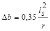
где ls и r - см. п. 5 настоящего приложения.
Переходный участок l4 (см. черт. 2) должен приниматься длиной не менее 20 уширений в каждую сторону. При сопряжении подходного канала в пределах переходного участка или непосредственно за ним с бьефом или переходным участком подходного канала соседнего шлюза его следует принимать на всем протяжении уширенным (без переходного участка).
7. При проектировании шлюзов, входящих в состав гидроузлов с водосбросными сооружениями, расположенных на сверхмагистральных и магистральных водных путях, условия входа, стоянки, движения и дрейфа судов в подходных каналах должны, как правило, определяться по данным лабораторных исследований.
Для шлюзов на водных путях местного значения такие исследования выполняются только при надлежащем обосновании.
8. В верхнем и нижнем бьефах шлюзов, как правило, должны быть предусмотрены предшлюзовые рейды, предназначенные для отстоя судов в ожидании шлюзования, при перемене тяги, переформировании составов и плотов, а также в период штормов и штормового предупреждения.
Предшлюзовые рейды должны располагаться на естественных или создаваемых путем устройства оградительных сооружений акваториях, непосредственно примыкающих к подходам шлюза, с высотой волны на судовых рейдах до 1 м и на рейдах переформирования плотов до 0,6 м. Указанные высоты волн принимаются с расчетной обеспеченностью по суммарной продолжительности в навигационный период 2% для шлюзов на сверхмагистральных и магистральных водных путях и 5%- на водных путях местного значения.
Расстояние от рейда до конца причала в подходе, как правило, не должно превышать трех полезных длин камер.
ПРИЛОЖЕНИЕ 6
Обязательное
ТРЕБОВАНИЯ К СИСТЕМАМ ПИТАНИЯ ШЛЮЗОВ
1. Основные системы питания шлюзов, применяемые для наполнения и опорожнения их камер, подразделяются:
а) по способу подачи воды в камеры и выпуску ее из камер на
сосредоточенную;
распределительную;
б) по способу забора воды из верхнего бьефа и сброса ее в нижний бьеф
в пределах подходных каналов;
вне пределов подходных каналов.
Могут применяться системы питания в комбинации из вышеприведенных.
2. Системы питания судоходных шлюзов должны отвечать следующим требованиям:
а) продолжительность наполнения и опорожнения камеры должна соответствовать заданной судопропускной способности шлюза;
б) режимы наполнения и опорожнения должны обеспечивать нормальные условия стоянки судов в камере и работы оборудования, а также нормальные условия стоянки и маневрирования судов в подходных каналах, в том числе при независимой работе камер многониточных шлюзов, имеющих общий подходной канал. Эти условия определяются допустимыми значениями продольных и поперечных составляющих гидродинамических сил, воздействующих в процессе шлюзования и после него на стоящие в камере или у причала суда, а также допустимыми значениями продольных и поперечных скоростей течения в подходных каналах, определяемыми в соответствии с обязательным приложением 4;
в) воздействие потока на элементы шлюза, а также на русло и крепление каналов при многократном наполнении и опорожнении камеры не должно вызывать их повреждения;
г) конструкции элементов системы питания должны быть доступными для осмотра и ремонта, а также должны обеспечивать быстрое прекращение наполнения или опорожнения камеры, безопасное для судов, находящихся в камере и на подходах;
д) проникание морской воды в пресноводный водоем, ограждаемый напорным фронтом, в который входит судоходный шлюз, должно быть исключено.
3. Для шлюзов на сверхмагистральных и магистральных водных путях, а также для шлюзов с напорами более 6 м на водных путях местного значения элементы системы питания должны определяться по данным лабораторных у натурных исследований.
4. Продольные и поперечные составляющие гидродинамических сил определяются расчетом или лабораторными исследованиями и не должны превышать:
для продольной составляющей
Fl = 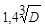
где D - водоизмещение расчетного судна или наибольшего грузового судна в расчетном составе в полном грузу, кН;
для поперечной составляющей 0,5 Fl;.
В камере и у причалов, не оборудованных подвижными рымами, величины продольных и поперечных составляющих гидродинамических сил следует умножать на величину cosb, где b - угол в вертикальной плоскости между канатами, удерживающими судно за причальные тумбы при расчетном наинизшем судоходном уровне воды, и горизонталью.
5. Выбор системы питания следует производить в соответствии с п. 2 с соблюдением следующих условий:
при значениях lc,efНd < 2000 и 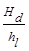
6. При наполнении (опорожнении) камеры шлюза наибольший инерционный подъем (спад) уровня воды в ней не должен превышать 0,25 м.
К моменту открытия ворот шлюза перепад уровней между камерой и бьефом не должен превышать 0,2 м.
7. Системы питания рассчитываются, принимая продолжительность открытия затворов равной: при наполнении камер для сосредоточенных систем питания - не более 0,8 и распределительных систем - не более 0,6 продолжительности наполнения; при опорожнении камер для любых систем - не более 0,6 продолжительности опорожнения.
Для шлюзов с сосредоточенной системой питания в целях сокращения времени, затрачиваемого на шлюзование, и увеличения пропускной способности шлюзов допускается применять многоскоростные и дифференцированные для различных типов судов и начальных глубин в камере графики открывания затворов галерей.
8. Для регулирования уровней воды в межшлюзовых бьефах следует предусматривать регуляторы уровней бьефов, которые должны быть рассчитаны на пропуск не менее одной сливной призмы в течение одного шлюзования по одной нитке шлюзов.
9. В многокамерных шлюзах при значительных колебаниях судоходных уровней воды в бьефах при надлежащем обосновании допускается предусматривать устройство водосливов во второй и последней камерах для сброса излишков воды сливной призмы. Верх водосливных отверстий следует располагать на глубине не менее наибольшей осадки судна, считая от отметки гребня водослива.
ПРИЛОЖЕНИЕ 7
Обязательное
ОПРЕДЕЛЕНИЕ РАЗМЕРОВ ПРИЧАЛЬНЫХ И НАПРАВЛЯЮЩИХ СООРУЖЕНИЙ
1. Причальные сооружения следует располагать в пределах длины участков подходов к шлюзу la, с правой стороны судового хода для входящих в шлюз судов принимая направление их движения, как правило, правосторонним. Расположение причала с левой стороны судового хода допускается при надлежащем обосновании левостороннего движения судов на подходах.
2. По условиям компоновки сооружений (например, при непараллельности оси судового хода в канале и оси шлюза) допускается причальную линию располагать под углом, как правило, не более 3° к лицевой грани шлюза в сторону от судового хода. При этом подходы к шлюзу должны быть прямолинейными на участке la + ls в соответствии с обязательным приложением 4. Расположение причальной линии под углом более 3° надлежит обосновывать исходя из условий, обеспечивающих безопасный и удобный подход судов к причалу и вход от него в камеру шлюза. Удаленный от шлюза конец причальной линии должен сопрягаться с границей судового хода.
3. По концам причальных сооружений следует предусматривать криволинейные участи (с радиусом не менее 0,2ls), сопрягающиеся с берегом канала, а также пешеходные мостики между причалом и берегом на расстоянии не более 200 м друг от друга.
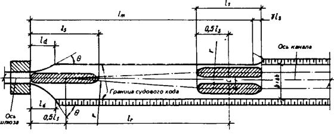
Чертеж. Схема подходного канала к шлюзу для определения длины причальной линии
4. Длину причальной линии шлюзов lm (см. чертеж) следует определять при одностороннем движении судов в каждом из направлений по формуле
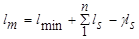
при двустороннем движении судов - по формуле
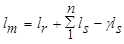
где lm - длина причальной линии, принимаемая от верховой грани верхней головы или низовой грани нижней головы шлюза;
lmin - наименьшее расстояние от верховой грани верхней головы или низовой грани нижней головы шлюза до носа первого ожидающего шлюзования судка, определяемое в соответствии с обязательным приложением 2;
- сумма длин одновременно шлюзуемых и устанавливаемых в камере шлюза в кильватер судов;
lr - длина участка, на котором судно при встречном движении переходит с оси шлюза на ось судового хода в канале;
ls - длина решетного судна;
g - коэффициент, принимаемый 0,2 при расположении причала в канале или за защитными дамбами и равный нулю в остальных случаях.
Длину причальной линии на водных путях местного значения допускается уменьшать при одностороннем движении судов до размеров полезной длины камеры шлюза; при двустороннем движении судов - до размеров полезной длины камеры шлюза, но с размещением начала причальной линии от внешней грани головы шлюза на расстоянии lr, в пределах которого следует предусматривать устройство направляющего сооружения и отдельно стоящих причальных сооружений (быки, свайные кусты и др.).
5. В двухниточных шлюзах причальные сооружения в верхнем и нижнем подходах, как правило, следует предусматривать на продолжении межкамерного пространства.
6. Для плавного перехода от ширины подходных каналов к ширине камеры следует предусматривать устройство направляющих сооружений, примыкающих к лицевым граням голов шлюзов.
В двухниточных шлюзах при отсутствии на продолжении межкамерного пространства причальных сооружений должны предусматриваться направляющие сооружения, примыкающие к лицевым граням внутренних устоев голов шлюзов и образующие с ними общий контур.
Сопряжение внешних очертаний направляющих сооружений с лицевыми гранями голов шлюзов должно быть плавным.
7. Угол q (см. чертеж) между направлением касательной к очертанию направляющего сооружения и осью шлюза не должен превышать:
а) для направляющих сооружений, расположенных со стороны причальной линии, 25° - для шлюзов на сверхмагистральных и магистральных водных путях и 30° - для шлюзов на водных путях местного значения;
б) для остальных направляющих сооружений этот угол должен быть соответственно 50 и 60°.
8. Длину направляющего сооружения следует устанавливать в зависимости от длины расчетного судна. Проекция на ось шлюза рабочей части направляющего сооружения ld, расположенной в пределах ширины судового хода, должна приниматься не менее 1/2ls, для сооружений, указанных в п. 7а, и не менее 1/3ls, - для сооружений, указанных в п. 7 б.
9. Возвышение верха стен или их парапетов, а также площадок причальных и направляющих сооружений над расчетным наивысшим судоходным уровнем воды, их ширина должны приниматься в соответствии с обязательным приложением 3.
Заглубление низа конструкций лицевых плоскостей причальных и направляющих сооружений под расчетный наинизший судоходный уровень воды при наличии плотовых перевозок должно приниматься не менее 1,2 осадки плота, но не менее 1 м, если по гидравлическим условиям не требуется большего заглубления. При отсутствии плотовых перевозок в шлюзах, не предназначенных для пропуска маломерного флота, низ конструкции лицевых плоскостей причальных и направляющих сооружений должен назначаться не менее чем на 0,5 м ниже верхнего привального бруса расчетного судна в грузу при расчетном наинизшем судоходном уровне. В шлюзах, рассчитанных на пропуск маломерного флота, низ этих конструкций должен назначаться не выше расчетного наинизшего уровня.
Верх причального и направляющего сооружения со стороны, обращенной к судовому ходу, должен иметь парапет или охранное ограждение, отнесенное от лицевой грани на расстояние, исключающее навалы судов. При отсутствии засыпки за сооружениями охранное ограждение устраивается и с тыловой стороны.
ПРИЛОЖЕНИЕ 8
Рекомендуемое
ТИПЫ РЫБОПРОПУСКНЫХ И РЫБОЗАЩИТНЫХ СООРУЖЕНИЙ
РЫБОПРОПУСКНЫЕ СООРУЖЕНИЯ
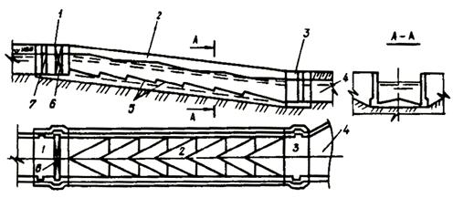
Черт. 1. Рыбоходные сооружения. Лотковый рыбоход
1 - верхняя голова; 2 - тракт; 3 - входной оголовок; 4 - подходной участок; 5 - устройство для гашения скорости воды в тракте; 6 - устройство для регулирования расхода; 7 - пазы ремонтных заграждений
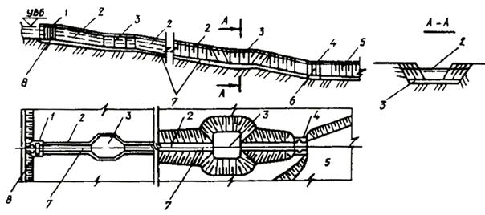
Черт. 2. Рыбоходные сооружения. Прудковый рыбоход
1 - верхняя голова; 2 - камеры тракта; 3 - прудки для отдыха рыб; 4 - входной оголовок; 5 - подходной участок; 6 - пазы ремонтных заграждений; 7 - тракт; 8 - устройство для регулирования расхода
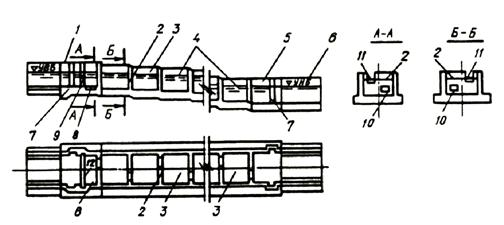
Черт. 3. Рыбоходные сооружения. Лестничный рыбоход
1 - верхняя голова; 2 - разделительные стенки; 3 - камеры тракта; 4 - тракт; 5 - входной оголовок; 6 - подходной участок; 7- пазы ремонтных заграждений; 8 - ихтиологическое устройство; 9 - блок питания; 10-донные вплывные отверстия; 11 - поверхностные вплывные отверстия; 12 - устройство для регулирования расхода
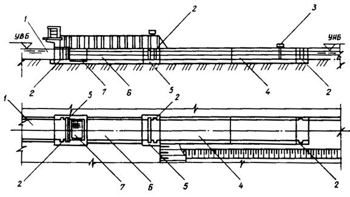
Черт. 4. Рыбоподъемные сооружения. Рыбопропускной шлюз
1 - верховой (выходной) лоток; 2 - аварийно-ремонтные заграждения; 3 - побудительное устройство; 4 - рыбонакопитель; 5 - затворы эксплуатационные с блоком питания; 6 - рабочая камера; 7 - ихтиологическое устройство
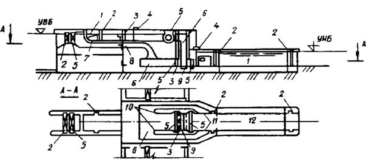
Черт. 5. Рыбоподъемные сооружения. Гидравлический рыбоподъемник
1 - верховой (выходной) лоток; 2 - аварийно-ремонтные заграждения; 3 - сетчатые затворы; 4 - побудительное устройство; 5 - затворы эксплуатационные и блоков питания; 6 - блок питания; 7 - выплывные отверстия; 8 - ихтиологическое устройство; 9 - подъемная площадка; 10 - обходные галереи; 11 - стационарные рыбозащитные решетки; 12 - рыбонакопитель
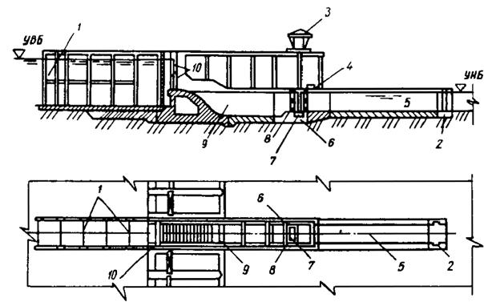
Черт.6. Рыбоподъемные сооружения. Механический рыбоподъемник
1 - верховой выходной лоток; 2 - аварийно-ремонтные заграждения; 3 - кран; 4 - побудительное устройство; 5 - рыбонакопитель; 6 - рабочая камера; 7 - ниша контейнера с подъемной площадкой; 8 - сетчатые затворы; 9 - блок питания; 10 - затвор блока питания
РЫБОЗАЩИТНЫЕ СООРУЖЕНИЯ
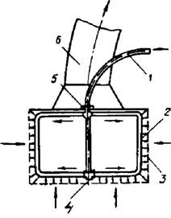
Черт. 7. Сетчатый струереактивный барабан
1 - труба; 2 - промывное устройство; 3 - сетка; 4, 5 - подшипники; 6 - всасывающая линия
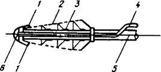
Черт. 8. Оголовок с потокообразователем (РОП)
1 - потокообразователь; 2 - сетка; 3 - перфорированная всасывающая труба; 4 - водоподводящий тракт; 5 - водоприемная труба; 6 - оголовок
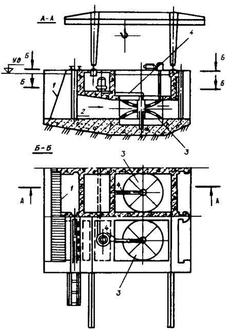
Черт. 9. Конический двухполосный рыбозаградитель с рыбоотводом
1 - сороудерживающая решетка; 2 - камера; 3 - заградитель; 4 - труба рыбоотвода
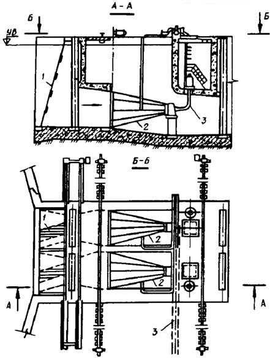
Черт. 10. Конический однополосный рыбозаградитель с рыбоотводом (конусный)
1 - сороудерживающая решетка; 2 - заградитель; 3 - рыбоотвод
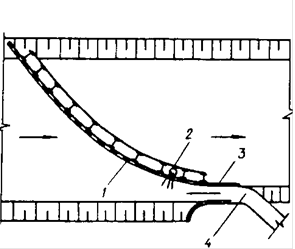
а)
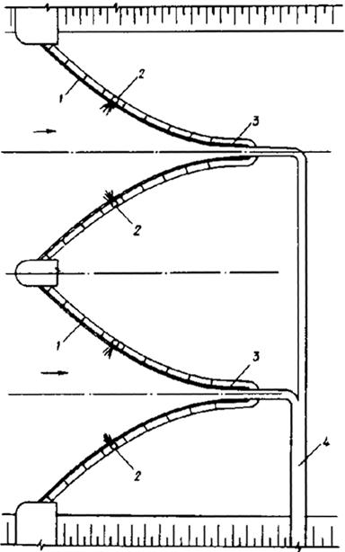
б)
Черт. 11. Вертикальные сетчатые, перфорированные или фильтрующие экраны
а - вертикальный экран; б - W - образный экран; 1 - вертикальный экран; 2 - промывное устройство; 3 - глухая часть экрана; 4 - рыбоотвод
Черт. 12. Зонтичный оголовок водозабора
1 - зонтичный оголовок; 2 - оголовок водозаборной трубы; 3 - водоза6орная труба; 4 - опорная конструкция
Черт. 13. Рыбозащитный концентратор с вертикальной сепарацией рыб (РКВС)
1 - водозаборный водоем; 2 - оголовок рыбозащитного концентрирующего ссооружения; 3 - забральная стенка; 4 - лотки - концентраторы; 5 - оголовок рыбоотвода; 6 - рыбоотвод; 7-водоприемник; 8 - водозаборные окна; 9 - сопрягающая стенка
ПРИЛОЖЕНИЕ 9
Рекомендуемое
ОПРЕДЕЛЕНИЕ БОКОВОГО ДАВЛЕНИЯ ГРУНТА
ОСНОВНОЕ ДАВЛЕНИЕ ГРУНТА
Активное давление (черт. 1)
1. В случаях, ограниченных
условиями: поверхность грунта плоская и ½r½< j, на поверхность
грунта равномерно распределена нагрузка g, слои
грунта за подпорной стеной параллельны поверхности (черт. 1, а),
горизонтальная рah и вертикальная рan составляющие интенсивности активного давления на
единицу высоты расчетной плоскости при ½e½ < (45° - j/2) на глубине у допускается определять исходя из гипотезы
плоских поверхностей скольжения по формулам
< (45° - j/2) на глубине у допускается определять исходя из гипотезы
плоских поверхностей скольжения по формулам
Для связных грунтов рah должно приниматься не менее 0. Сцепление грунта по расчетной плоскости не учитывается.
В формулах (1) и (2):
j и С - угол внутреннего трения и удельное сцепление грунта, относимые к первой или второй группе предельных состояний;
jс - угол трения грунта по расчетной плоскости, как правило, принимаемый по абсолютной величине не более j и не более 30° для плоскости, проходящей в грунте, и не более 2/3j по контакту сооружения с грунтом;
ру - вертикальное давление в грунте у расчетной плоскости на глубине у
где gi и Dуi - соответственно удельный вес грунта (в случая насыщения грунта водой - с учетом взвешивания) и высота i-го слоя грунта у расчетной плоскости;
и- коэффициенты горизонтальной составляющей активного давления грунта, определяемые по формулам:
; (5)
здесь
;
;
.
При определении горизонтальной Еah и вертикальной Ean составляющих давления грунта суммирование эпюр интенсивности давления производится по высоте.
Если расчетная плоскость проходит в грунте, то следует определять давление при нескольких возможных ее положениях (нескольких углах e), приняв за расчетное наивыгоднейшее для рассматриваемого предельного состояния. В однородном грунте на участке, где e > (45° - j/2) (пологая стена) расчетную плоскость допускается принимать под углом e = (45° - j/2).
Черт. 1. Схемы к расчету активного давления грунта
а - в простых случаях; б - сложных случаях; 1 - расчетная плоскость; 2 - возможные поверхности обрушения; 3 - вертикальные плоскости раздела между элементами призмы обрушения
2. В общем случае горизонтальную Еah и вертикальную Еаn составляющие активного давления грунта на расчетную плоскость (черт. 1, б) допускается определять, намечая возможные поверхности обрушения 2 от низа расчетной плоскости 1. При больших неравномерных нагрузках на поверхности грунта и слоях, резко отличающихся по характеристикам, поверхности обрушения могут быть неплоскими. Следует также рассматривать поверхности, частично или полностью проходящие по поверхности котлована или слабым прослойкам.
Для каждой поверхности обрушения определяют значение горизонтальной Еаh составляющей бокового давления грунта. Наибольшее значение Еah будет искомой горизонтальной составляющей активного давления, а соответствующая этой величине поверхность обрушения - расчетной.
Для определения Еah призму обрушения разделяют вертикальными плоскостями 3 на отдельные элементы таким образом, чтобы в основании каждого был однородный грунт и основание можно было считать плоским. При e > 0 элемент между расчетной плоскостью и вертикалью, проведенной через ее низ, как самостоятельный элемент не рассматривается: в зависимости от того, что может дать большее значение Еah, вес этого элемента Ge, присоединяется к ближайшему или распределяется между остальными, например, пропорционально их весам Gi).
Горизонтальная Еah и вертикальная Еаn составляющие бокового давления грунта определяют по формулам:
; (6)
, (7)
где n - число элементов в призме обрушения;
; (8)
, (9)
здесь Gi - сумма вертикальных составляющих нагрузок, включая вес элемента, нагрузки на его поверхности и др.;
Fh - сумма горизонтальных составляющих нагрузок в пределах ширины элемента bi , в том числе фильтрационные силы (со знаком "плюс" - при направлении в сторону расчетной плоскости);
bi - ширина элемента;
ji - угол внутреннего трения у основания элемента;
сi - средневзвешенное значение удельного сцепления по высоте элемента;
a - угол между вертикалью и поверхностью обрушения, принимается со знаком "плюс" - по направлению часовой стрелки;
js - средневзвешенное значение угла трения по расчетной плоскости.
Если вычисленное значение Eah < 0, то следует принимать Еah = 0. Если сила Еan < 0, то она направлена вверх.
Для определения интенсивности давления рah и точки приложения сил Еah и Еan принимают допущение, что давление на любую часть стены высотой у < Н можно определить тем же способом, что и для всей стены. Вследствие этого выбирают на расчетной плоскости несколько характерных точек на глубинах уj и для каждой определяют указанным выше способом давление Еahj, а затем вычисляют среднюю интенсивность давления на участке (yj - yj-1) по формулам:
; (10)
. (11)
Для верхних участков, которые удовлетворяют условиям применимости формул (1) и (2), можно для упрощения расчета использовать рекомендации п.1.
Давление грунта в состоянии покоя
3. При горизонтальной поверхности и горизонтальных слоях грунтов, равномерно распределенной нагрузке g на поверхности грунта интенсивность давления на жесткую несмещаемую в горизонтальном направлении вертикальную расчетную плоскость при отсутствии трения грунта по этой плоскости определяется по формуле
, (12)
где рy - см. формулу (3);
loh - коэффициент бокового давления грунта в состоянии покоя.
, (13)
здесь n - коэффициент поперечной деформации грунта, принимаемый при отсутствии опытных данных по СНиП 2.02.02.85.
4. В общем случае давление грунта на жесткую подпорную стену допускается определять как активное, принимая удельное сцепление грунта равным нулю и условное значение угла внутреннего трения по формуле
Давление грунта на внутренние стены ячеек (оболочек) (черт. 2)
Черт. 2. Схема к расчету давления грунта на внутренние стены ячеек (оболочек)
1 - ячейка; 2 - грунт засыпки; 3 - грунт основания
5. При равномерно распределенной нагрузке q на уровне верха ячейки горизонтальная и вертикальная составляющие интенсивности давления грунта на глубине у определяются по формулам:
; (15)
, (16)
где ру - вертикальное давление на глубине у:
здесь ; (18)
g - удельный вес грунта внутри ячейки на глубине у;
уi - высота i-го слоя грунта над поверхностью слоя, в пределах которого определяется рah;
ру,i - вертикальное давление на поверхности слоя, в пределах которого определяется рah (для верхнего первого слоя при у £ у1 ру,i = q; для второго при у >уi вычисляется по формуле (17), принимая y = y1 и py,i= q и т. д);
А и u - соответственно площадь и периметр ячейки (для квадратных и круглых ячеек A/u = d/4, для параллельных стен А/и = d/2 (d - расстояние между стенами ячейки или диаметр круглой ячейки);
lah - коэффициент горизонтальной составляющей давления грунта, определяемый по формуле (4). Для жестких, не расширяющихся в горизонтальном направлении ячеек расчет ведется на условное значение угла внутреннего трения, определенное по формуле (14). Угол трения js допускается принимать постоянным в пределах высоты слоя грунта: при Ef ³4Ec или при наличии у ячейки днища js = 2/3j, при Еf < Еc js = 2/3j, если у £ уcr, и js = -1/3j, если у > уcr; Еf и Еc - соответственно модули деформации грунта основания и внутри ячейки; ycr - глубина, на которой осадка грунта внутри ячейки равна осадке ячейки, т. е. отсутствует вертикальное смещение грунта относительно расчетной поверхности (как правило, уcr определяется путем последовательных приближений).
Пассивное давление (черт. 3)
Черт. 3. Схема к расчету пассивного давления грунта
6. При плоской поверхности грунта, равномерно распределенной нагрузке q на поверхности грунта и слоях грунта, параллельных поверхности, горизонтальная рph и вертикальная рpv составляющие пассивного давления грунта на единицу высоты расчетной плоскости определяются по формулам:
; (19)
, (20)
где py,j и с - см. п.1;
lphj и lphc - коэффициенты горизонтальной составляющей пассивного давления грунта;
e - угол наклона расчетной плоскости к вертикали, принимаемый со знаком "минус" при наклоне от грунта;
js - угол трения грунта по расчетной плоскости, принимаемый равным по абсолютной величине от 0 до j - при определении lphj по табл. 1 или формуле (21) и от 0 до 2/3 j - при определении lphj по формуле (22) .
При r = 0 и учете криволинейных поверхностей выпора lphj следует определять по табл. 1 или при j ³ 15° - по формуле
. (21)
При r £ j и e £ 7°, учете плоских поверхностей выпора - по формуле
, (22)
где (23)
Коэффициент lphc определяется по формуле
, (24)
При значении ppv< 0 вертикальная составляющая интенсивности пассивного давления направлена вниз.
Горизонтальная Еph и вертикальная Ерv составляющие пассивного давления грунта определяются суммированием эпюр интенсивности давления грунта по высоте.
Таблица 1
|
js, град |
Коэффициенты lphj при e, град, равном |
|||||||
|
-30 |
-20 |
-10 |
0 |
+10 |
+20 |
+30 |
||
|
5 |
0 |
1,09 |
1,12 |
1,14 |
1,18 |
1,22 |
1,26 |
1,30 |
|
5 |
1,15 |
1,18 |
1,22 |
1,27 |
1,32 |
1,37 |
1,42 |
|
|
10 |
0 |
1,20 |
1,24 |
1,33 |
1,42 |
1,51 |
1,62 |
1,75 |
|
5 |
1,34 |
1,42 |
1,47 |
1,55 |
1,62 |
1,77 |
1,91 |
|
|
10 |
1,45 |
1,51 |
1,56 |
1,63 |
1,71 |
1,79 |
1,95 |
|
|
15 |
0 |
1,30 |
1,39 |
1,55 |
1,69 |
1,93 |
2,07 |
2,34 |
|
7,5 |
1,58 |
1,72 |
1,78 |
1,95 |
2,13 |
2,39 |
2,60 |
|
|
15 |
1,80 |
1,90 |
2,05 |
2,12 |
2,32 |
2,53 |
2,84 |
|
|
20 |
0 |
1,45 |
1,60 |
1,80 |
2,04 |
2,32 |
2,79 |
3,17 |
|
10 |
1,86 |
2,06 |
2,25 |
2,51 |
2,84 |
3,28 |
3,73 |
|
|
20 |
2,27 |
2,40 |
2,61 |
2,86 |
3,15 |
3,49 |
3,86 |
|
|
25 |
0 |
1,58 |
1,74 |
2,12 |
2,46 |
3,00 |
3,68 |
4,30 |
|
12,5 |
2,23 |
2,55 |
2,79 |
3,67 |
3,86 |
4,78 |
5,77 |
|
|
25 |
2,87 |
3,16 |
3,48 |
3,94 |
4,59 |
5,36 |
5,83 |
|
|
30 |
0 |
1,72 |
2,02 |
2,43 |
3,00 |
3,70 |
4,70 |
6,10 |
|
15 |
2,74 |
3,17 |
3,71 |
4,46 |
5,45 |
7,42 |
8,66 |
|
|
30 |
3,72 |
4,23 |
4,86 |
5,67 |
6,65 |
7,82 |
9,01 |
|
7. В общем случае пассивное давление грунта следует определять методами, учитывающими образование в предельном состоянии криволинейных поверхностей выпора, в частности, методами, основанными на теории предельного равновесия сыпучей среды.
В сложных случаях (неплоские и непараллельные границы слоев грунта, неплоская поверхность и др.) допускается определять пассивное давление исходя из предположения об образовании плоской (для однородного грунта и e £ 7°) или ломаной поверхности выпора методом, аналогичным указанному в п. 2. При этом Ерh и Ерv следует определять по формулам:
; (25)
. (26)
За расчетное значение Ерh принимается наименьшее из значений, вычисленных при различных поверхностях выпора.
При значении Еpv меньше нуля вертикальная составляющая давления направлена вниз.
ДОПОЛНИТЕЛЬНОЕ (РЕАКТИВНОЕ) ДАВЛЕНИЕ ГРУНТА
8. Дополнительное (реактивное) давление грунта засыпки допускается определять расчетом сооружения во взаимодействии с упругой невесомой средой. Учитывается воздействие временных длительных нагрузок, вызывающих отпор грунта засыпки (температурные воздействия, дополнительное давление воды при наполнении камер шлюзов, деформации основания, приводящие к перемещению стены на грунт засыпки); влияние близко расположенных сооружений и скальных склонов; изменения деформативных характеристик грунта по глубине засыпки.
Деформативность грунта определяется либо модулем деформаций En и коэффициентом поперечной деформации грунта v, либо коэффициентом упругого отпора К.
Модуль деформаций грунта следует принимать на основании данных лабораторных или полевых исследований, выполняемых в соответствии со СНиП 2.02.02-85. Допускается использовать табличные нормативные значения модулей деформаций по СНиП 2.02.01-83 для тинистых грунтов и по табл. 2 для несвязных грунтов.
Таблица 2
|
Нормативные значения модуля деформаций несвязных грунтом Еn,, МПа(кгс/см2), при коэффициенте пористости е |
|||
|
0,45 |
0,55 |
0,65 |
|
|
Горная масса |
60 (600) |
50(500) |
40 (400) |
|
Галечный грунт |
56 (550) |
45(450) |
35(350) |
|
Песок |
|||
|
гравелистый крупный |
50(500) |
40(400) |
30 (300) |
|
средней крупности |
45 (450) |
38 (380) |
28(280) |
|
мелкий |
40(400) |
30 (300) |
26 (260) |
При определении дополнительного (реактивного) давления грунта должно учитываться изменение жесткости конструкции в связи с образованием и раскрытием трещин. Расчет производится в соответствии с указаниями СНиП 2.06.08-87.
При длительно действующих и медленно изменяющихся нагрузках (например, температурное воздействие) деформационные характеристики засыпок из несвязных грунтов допускается принимать сниженными на 30% по сравнению с характеристиками при кратковременном загружении.
При расчете на температурные воздействия определение углов поворота и продольных перемещении элементов конструкций производится на действие температуры td и перепад температур Dtd.
Расчетную температуру td и перепад Dtd надлежит определять по общим правилам расчетов нестационарного температурного поля сооружений за шестимесячный период: от самого холодного t1 до самого теплого месяца t2.
При таком расчете действительная криволинейная эпюра распределения температур заменяется статически эквивалентной трапецеидальной эпюрой, по которой определяются средние значения tmt1,2 и D tmt1,2, а расчетные температуры вычисляются как разности:
; (27)
. (28)
ПРИЛОЖЕНИЕ 10
Обязательное
НАГРУЗКИ ОТ СУДОВ НА СУДОХОДНЫЕ ШЛЮЗЫ
1. При расчете шлюзов должны учитываться следующие нагрузки от судов:
нагрузки от навала на причалы в подходах или стены камеры шлюза пришвартованного судна при действии ветра, течения и гидродинамической силы;
нагрузки от навала судна при его подходе к причалам или стенам камеры шлюза;
нагрузки от натяжения швартовов при действии на судно ветра, течения и гидродинамической силы.
2. Нагрузка от навала на причалы в подходах или стены камеры шлюза пришвартованного судна при действии ветра и течения определяется в соответствии со СНиП 2.06.04-82. К поперечной силе от суммарного воздействия ветра и течения Qtot добавляется поперечная составляющая гидродинамической силы, определяемая в соответствии с обязательным приложением 6.
Таблица
|
Ширина шлюза, м |
Сооружение |
Нормальная составляющая скорости подхода судна v, м/с, с расчетным водоизмещением D, тыс. кН (тс) |
|||
|
до 30(3) |
50(5) |
70(7) |
100 (10) и более |
||
|
До 18 |
Причальное и направляющее |
0,25 |
0,20 |
0,15 |
0,12 |
|
Камера шлюза |
0,05 |
0,02 |
0,02 |
0,02 |
|
|
Св.18 |
Причальное и направляющее |
0,30 |
0,25 |
0,20 |
0,15 |
|
Камера шлюза |
0,070 |
0,050 |
0,035 |
0,020 |
|
3. Поперечная горизонтальная сила Fq от навала судна при подходе к причалам и стенам камеры шлюза определяется в соответствии со СНиП 2.06.04-82, принимая нормальную составляющую скорости подхода судна v, м/с, по таблице, при этом величина поперечной горизонтальной силы Fq от навала судна не должна превышать предельных значений нагрузки на бортовое перекрытие судна, кН, определяемых по формуле
где ls,max - длина наибольшего одиночного или входящего в состав судна, м.
Для уменьшения вероятности повреждения корпуса судов и уменьшения нагрузки от навала на сооружения шлюза следует рассматривать целесообразность проведения мероприятий, обеспечивающих условия, при которых значение Fq, кН, не превысит: для грузовых теплоходов смешанного плавания типа "река-море", имеющих класс регистра "М" и ледовое подкрепление - 5ls;
для грузовых теплоходов класса "О" и сухогрузных барж, в том числе входящих в составы - 3,5ls;
для танкеров и наливных барж, в том числе входящих в составы - 2,5ls.
4. При проверке на сдвиг и опрокидывание отдельно стоящих незасыпанных конструкций значение поперечной горизонтальной силы Fq от навала судна следует во всех случаях принимать равным значению нагрузки на бортовое перекрытие судна, определяемой по формуле (1).
5. Нагрузку от навала судна на парапеты, лицевая поверхность которых совпадает с лицевой поверхностью сооружения, следует определять в соответствии с п. 3.
В этом случае водоизмещение расчетного судна принимается в соответствии с осадкой, при которой верхний привальный брус расчетного судна находится на уровне верха парапета.
6. Расчетная длина стены камеры l, на которую распространяется сила навала судна, должна удовлетворять условию
, (2)
где d - толщина стены в рассматриваемом сечении;
hp - расстояние от точки приложения силы навала до рассматриваемого сечения.
7. Нагрузка на причал в подходе или на стену шлюза в камере от натяжения швартовов, воспринимаемая одной тумбой или рымом, должна приниматься в соответствии со СНиП 2.06.04-82.
СОДЕРЖАНИЕ